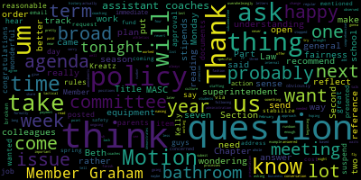
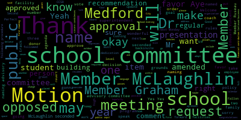
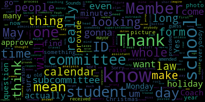
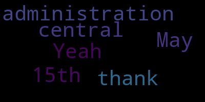

[Graham]: superintendent has that in the same way that we ask for documents for our posted meetings to come to us, you know, not the same day. I think that is reasonable.
[McLaughlin]: Member Hays and member McLaughlin.
[Lungo-Koehn]: And if you could shut your microphones off when you're not speaking, so there's no echo. Thank you.
[Hays]: Um, so the only thought I have about that is I think the difference we're doing the process very differently. So in fact, if we're creating it as subcommittee meeting, I don't know, I mean, you superintendent attended our last subcommittee meeting. If we're creating it at a subcommittee meeting you're attending. I mean, we can still provide it. I think the thing to realize member press maybes we're not last year, the way it was done was that one member took all of ours and created a composite. on their own. This time we're doing this as a group, we're doing it at a subcommittee meeting, which will be a regular subcommittee meeting that's open for people to attend. So it is a very different process altogether. We can still present what we end up writing, but I think you'll be a part of the superintendent along the way too. . Point of information?
[Ruseau]: Does member hayes mean a committee of the whole or subcommittee? Sounds like she's talking about the committee of the whole, but she's saying subcommittee.
[Hays]: What I'm saying is according to the process we have established, the subcommittee is going to work on a composite evaluation. We obviously can't approve it in the subcommittee meeting. We would be taking it to the committee of the whole, which is where the whole committee would
[lRR2dgf0NZM_SPEAKER_04]: go over it and vote on it. Member McLaughlin.
[McLaughlin]: Thank you. Yeah. And I think that I agree with all of my colleagues here. I think it's a reasonable request. I think the training from MASC and this process is hopefully going to go much more smoothly and will be much more transparent in terms of the meetings being public with the composite being put together. That said, I'm sure that the superintendent attends the subcommittee meetings and is also paying attention to a number of things at those subcommittee meetings. So obviously I think it would be good for her to have, you know, time alone to look at the document, what have you. So I think June 1st is reasonable for the subcommittee to add that date in there in between the time, but I also, or, and I also want, the community and the public to know obviously that this is a, you know, that these are public meetings, you know, there'll be subcommittee meetings. So, you know, people can and I expect will attend and will understand the process a bit better. So I think that that would be really helpful. So I guess I'm saying yes. And I don't know that we need a motion to add the June 1st in there, or do we, because we have to make a motion to approve the minutes. So do we need to make a motion? for June 1st.
[Lungo-Koehn]: Motion for approval as amended by member Gramps. Sure. Motion for approval as amended by member McLaughlin, seconded by member Kreatz, member Ruseau.
[Ruseau]: I just want to make sure I have this for the minutes. It's as amended that on June 1st, we will have a committee of the whole or subcommittee.
[Lungo-Koehn]: The superintendent will be provided the write up of the evaluation composite.
[Ruseau]: thank you. How would that be provided?
[Lungo-Koehn]: I'm not sure I understand. From the committee, I'm assuming. It would be a draft, right? A draft that the committee, one of you I'm sure, will finalize and it will be sent along with all the paperwork we get in our Friday packet on June 1st.
[Ruseau]: Looking at the minutes, the last time the subcommittee meets is April 24th.
[Lungo-Koehn]: No, Monday, May 22nd.
[Ruseau]: Monday, May 22nd, it says the responses are due.
[Lungo-Koehn]: Yep, and then they'll... No, May 21st, the responses are due.
[Ruseau]: May 21st. I'm looking at an old version of the minutes. I might be looking at an old version too. Sorry, I'm looking at the one I just received.
[McLaughlin]: May I? Yeah, so I was also just going to say, yeah, so the timeline for the delivery of the material and, oh shoot, now I just lost my train of thought. There was something else that I wanted to mention.
[lRR2dgf0NZM_SPEAKER_04]: If it comes back to me, I'll ask again, sorry. Do you have different, okay, you're all set, okay.
[Lungo-Koehn]: Motion for approval as amended.
[McLaughlin]: Actually, I remembered, sorry. Just that, you know, obviously everything will be marked draft, that it's not approved until it's voted on, you know, just to be really clear that we want to make sure that we're not, you know, confusing evaluations at all, that these will be marked very clearly, draft, not approved. Thank you.
[Lungo-Koehn]: Thank you. Motion for approval as amended. All those in favor? All those opposed, minutes are approved. Number five, reporter of the superintendent.
[lRR2dgf0NZM_SPEAKER_04]: First up, we have our superintendent's updates and comments, Dr. Marice Edouard-Vincent. Good evening.
[SPEAKER_14]: So hot off the press, right now while we are here in Chambers, our boys, our hockey team, they're playing inside La Conte rink right now. And the score that I received is six to one. We are playing against Agawam. So it looks like it's going to be a wonderful victory for Mustang Nation. So we're really proud of them for the wonderful work, sportsmanship that they're displaying right now. We wish them all the best. So congratulations thus far. I know it's their period, but I'm very excited for them. So it is my hope that you and your families were able to enjoy some fun and quality time together over February break. Our cold weather has returned as everyone is aware, we are closely monitoring the news. And, yes, the groundhog did show his shadow so tomorrow, it's still kind of up in the air. anywhere from one to three inches up to six inches. It's going to be a very potentially treacherous commute in the morning. So the city has already put in the parking effect, effective 7.30 for this evening. So 7.30 tomorrow morning. Okay, 7.30 tomorrow morning. And as of right now, Metro Public Schools is open, but we are continuing to just monitor the news and try to get accurate information in terms of how much snow we're really thinking may come to us tomorrow. Also, I would just like to share that the Friday before February break, Friday, February 17th, was our Black History Month celebration at the high school. It was a great celebration that took place in the gymnasium. The entire high school community packed the gymnasium, and it was a wonderful celebration, our mayor spoke I got to give remarks and there was an inspirational guest speaker in the person of Mr. Brian Owens who really spoke about his great accomplishments and overcoming odds and being successful in what he, you know, from being an athlete and now being a successful businessman, and really just gave an inspirational speech to our students. We also had many of our students in the Black Student Union, BSU, that one student shared poetry, others performed dance, fashion show, really just showing their culture. And I really wanted to thank Ms. Walker, Shavos Walker, who is one of the high school assistant principals. and two of the advisors that were working very closely with the students, Ms. Jackson, Ms. A, and also Mr. Dello Russo working with the students in the BSU. That was a very successful event. We also had some of our students from the Black Student Union attend a leadership conference And Miss Walker was one of the presenters. So I just want to recognize Taliana, Talia, and Zanea, some of our young people at the high school who attended that leadership conference, and they truly have great leadership potential, and they also were very actively involved with all of the students that participated in the Black History Celebration. So congratulations to all of them on a wonderful celebration of culture and bringing the entire school community together. I have plenty of good news to share. I want to say a special congratulations to our Mustang girls hockey player, a junior by the name of Juliana Storetti. She was named the 22-23 Northeastern Hockey League First Team All-Conference. as well as to the Mustang Girls hockey grade eight player, Avery White. She was named a Northeastern Hockey League All-Star so congratulations to both Avery and Juliana. I also wanna share that the Medford High School Ethics Bowl won the New England Regional Conference, beating the Windsor School in round one, which is an independent school, Deerfield Academy in round two, Concord Academy in round three, the BU Academy in the semifinal, and then Lexington High School. Later that week, they beat Phillips Exeter Academy in New Hampshire, which made them eligible for the Nationals Ethics Bowl, which will be taking place at UNC, University of North Carolina. We are so proud of our Mustang team members, Eamon Costello, Tegan Mastone, Abigail Sloan, Vishal Romero, and Claire Gingle. The alternates are Mateo DeVita, Sonia Benapal, and Andre Doherty. They are coached by Mr. Esner. Congratulations to all of them. Also, I want to recognize Ms. Dineo. Oh, they're all as well. Oh, you're ready? Okay, they're going to come up with, wonderful, wonderful. I did not realize some of you already here in the audience, but congratulations, and we look forward to hearing from you ourselves, from your report, but congratulations. I'm also excited to note that two more Mustangs received the Scholastic Art Awards. Julia Hanratty won a Silver Key Award and Maggie Fowler won an Honorable Mention, so congratulations to both of them as well. So the Mustangs begin the MIAA Winter Tournament play today. We talked about our boys playing at Lakanti Link. Tomorrow, the boys' basketball team travels to Peabody for a game at 7 p.m. And Wednesday, the Mustang girls' hockey team travels to St. Mary's for a game at 6 p.m. So we're wishing good luck to all of our Mustangs out there. Just so you know, earlier this month, on Wednesday, February 8th, the Roberts Elementary School hosted WBZ News meteorologist, Sarah Robleski. I hope I'm saying it the right way. Anyway, she came to the Roberts Elementary School. I almost wish she was here today to give us a really pointed direction about the weather. That would have been wonderful. But she talked about the changing weather with our students. And she talked about climate change with the third grade classes. So thank you so much to WBZ news reporter, meteorologist, Sarah W. It was an informative and fun discussion for all of our students. Also right before the February break, the Brooks Elementary School held their monthly food drive. They collected 234 bags of food, which is more than 100 bags collected last month. The classroom with the most donations received the Can Man award. And that was Ms. McIsaac's third grade class. special congratulations to that classroom. Special thanks to the parent and student volunteers from Ms. Pires' class and Mr. Allen's classes, who helped to sort and bag the food items. We also want to thank our community partner, Whole Foods, for providing the bags, and the vocational school for printing the colored flyers. So thank you for that collaborative effort. Also, I just want to recognize prior to vacation, the Andrews and McGlynn PTOs hosted a middle school skating party on Wednesday's half day. We do love this type of collaboration and the students who attended the skating party had blast. I have a few important upcoming events. Tuesday, tomorrow, February 28th by Zoom is going to be a building bridges to kindergarten session. It's from 630 to 730 PM on Zoom. Grade eight course selection. I wanna just thank member Graham for reaching out to the office today, giving us some important feedback. The grade eight course selection was originally scheduled for this Wednesday, March 1st. It's being postponed until Wednesday, March 15th. It's from six to 8 p.m. This is a critically important event where parents will be choosing the academic course pathway that you want your child to take when they come to the high school as a ninth grader. Yes, your student can come with you, but it's important for you as a parent to be there in looking at the classes that are being offered and thinking about where your child is. And meeting with both Principal DeLava and Principal Fallon, who's here with us, they will be talking to parents and giving parents the importance of selecting the courses for next school year when you're rising eighth grader is a ninth grader. So we will definitely be putting that in the weekly update. And again, it's postponed until March 15th. So those of you who are watching March 15th, 6 to 8 p.m., very important day for parents of eighth graders, rising ninth graders. Also, Thursday, March 2nd, it's Read Across America Day. The elementary schools will be hosting events and having special guest readers. Additionally, the elementary schools are beginning their scholastic book fairs. So please check with your child's PTO for dates and times. Saturday, March 4 is annual trivia night. That's for the high school NHS and NVTHS PTO groups. It's $25 per person. It's going to take place from 7 to 10 p.m. at the American Legion Hall. Again, it's annual trivia night. I'm sure it's gonna be lots of fun. $25 per person, and the funds raised directly benefit students, teachers, and staff at Medford High School. If you want more information, you can email the PTO for further information. Their email address is nhs.nvths.pto at gmail.com. On Sunday, March 5th, Read by the River. It's an annual literacy carnival for students in grades K through five, hosted at Tush University from one to 4 p.m. And since February is our short month, next Monday, March 6, the school committee, we will be meeting again at 6pm here in the chambers. And tomorrow, Tuesday, February 28, is Rare Disease Awareness Day. Rare Disease Awareness Day seeks to shine a light on rare diseases and advocates for health equity for all. Over 7,000 rare diseases impact over 300 million people globally. The theme for 2023 is show your stripes, show your colors, which encourages our community to visibly come together to support those with rare diseases. Thank you.
[Lungo-Koehn]: Thank you, Dr. Edward-Vincent. Can I ask a question? Member McLaughlin.
[McLaughlin]: Thank you, Dr. Robinson. I just wanted to ask, maybe this can be a consideration for response at the next meeting, but for the grade eight course selection night for March 15th, if we could just let the community know how that information is gonna be available for translation and any other needs for families for that night. So maybe at the next meeting, if you could let us know.
[SPEAKER_14]: Yes, I can definitely have that information for you for the next meeting. Thank you.
[Lungo-Koehn]: Thank you. We have recommendation to approve travel to University of North Carolina UNC for the ethics team to compete at the Ethics Bowl National Competition.
[lRR2dgf0NZM_SPEAKER_04]: Eric Eisner, English language arts teacher. Welcome. Good evening, everyone.
[wn9Gi3fuhEM_SPEAKER_00]: A little bit about the Ethics Bowl, just to start. It doesn't have the same brand recognition as a debate team does, or debate, traditional debate. The Ethics Bowl competition is an annual competition. This is the 10th year of the competition. Each year in September, the national organizers disseminate 15 cases. They're morally ambiguous cases that cover an array of different topics, some of which are very big international cases, some are very local, like one was Is it ever okay to date your best friend's ex? That sort of thing. And so the kids work for about six months preparing arguments for these cases, and then ultimately compete over at Tufts University in the New England regional competition. So as you previously said, they were successful this year defeating a number of different teams, ultimately winning against Lexington in the final round. After that, they competed in a follow-up regional match against Phillips Exeter Academy and were once again successful. The past couple of years have been understandably difficult with this. We previously qualified two years ago during the first year of the pandemic, but that event had to be canceled and it wasn't held. And since then, it's been held over zoom. So this is the first year that it's been back in person. And I think it was it was wildly successful and it was good to see them sort of face to face competing against other kids again. Um, so this is the fourth time we've qualified for nationals. This will be the third time that we're actually going to get to go and attend in person. And again, just to recognize, we have Eamon Costello, Claire Gingo, Sonia Benapol, Andrei Deridi, and with us tonight, Abigail Sloan, Teagan Mastone, Michelle Romero, and Mateo DeVetta.
[SPEAKER_12]: So as a result of their wins, they were able to participate in the semifinal ethics for regional playoffs, which was held on February 14 Valentine's Day against Phillips Exeter Academy and who Phillips was the winner of the New Hampshire bowl Medford's team. was once again successful in the competition. And now, because of all of the success, they have been invited to participate in the National Ethics Bowl, as Mr. Esner just said, which will be held at the University of North Carolina Chapel Hill. And that will be on March 31st, 2023. I personally want to express the great pride for this team to thank Mr. Esner for all of his hard work. He has been with this since its infancy. When Tufts University came to us to form a partnership and it's he has been with them every step of the way. So we're really proud of all of you, as well as your teammates for doing all of this. Based on these consecutive victories, because we are invited to the National High School Ethics Bowl, we first of all want to request approval in terms of participation. There are 24 teams that are going to attend across the country, and they'll compete. And we do have, I believe I shared with you an itinerary of the various activities that will happen throughout the weekend. They'll be able to tour UNC. They'll be able to participate in a number of different events, as well as, of course, the ethics simulations. So we are requesting approval as well as funding for this out-of-state field trip, both of which have been approved in the past years that students have attended. But we are, of course, here to answer any questions, and most importantly, to thank such a successful group of individuals and their wonderful advisor, Mr. Esner. So thank you.
[Lungo-Koehn]: Member McLaughlin. Thank you.
[McLaughlin]: Congratulations. That's good stuff. Excellent information. And I would love to see you guys go on this trip. And I would love if you would come back, obviously having one, but also, you know, maybe sharing a couple of the ethical dilemmas that are discussed, because I think What's so interesting about ethical dilemmas are that there's no easy answer. That's the whole point. And that sort of what the argument is of them. So, and was any of the other ones recorded? Do you guys know? Yeah. No. No. No. Yeah.
[SPEAKER_12]: I do think at some point we informally shared some of the different simulations that were given, but I don't think it was recorded. Yeah.
[lRR2dgf0NZM_SPEAKER_04]: Congratulations. That's great stuff.
[SPEAKER_12]: Thank you.
[Ruseau]: member russell thank you mayor um yes congratulations certainly i was very excited um when i heard about the the earlier wins um i just have a sort of i guess it's a question probably for the superintendent i think we have a travel policy requiring the whole travel form to be filled out with the nurse's approval and all this other stuff for out of state has that been completed we are in the process of
[SPEAKER_12]: There is a form, I'm sorry if you're asking Dr. Vincent, I didn't mean to interject, but just so you know, we are in the process of having parents sign those forms. You're absolutely correct, there are forms and we're following all those procedures. I didn't mean to interject though.
[Ruseau]: And since I can't find the form off the top of my head, it could be wrong, but I thought that in the process, which is very much detailed on the form, we had to approve the form with its, and I could be wrong, and if I'm. So I could have that form for you on Monday, because we're meeting again. Yeah, if you could just make sure to check so that we don't miss that. That's my concern, really. We'll do. And I can have it for you next Monday. I'd like a motion to approve the funding.
[Graham]: Second. Motion for approval. Member Graham? I just wanted to second and also say congratulations. You guys did a wonderful job. and you will do great. Member Kreatz?
[SPEAKER_27]: Yes, I just want to say congratulations also, great job. And mama says it too, congratulations.
[Lungo-Koehn]: Congratulations, go to UNC and make us proud, okay? Congratulations and good luck. Thank you. Motion for approval by Member Ruseau, seconded by Member McLaughlin and Graham. Do we need a roll call? We'll do a roll call.
[Ruseau]: Member Graham.
[Lungo-Koehn]: Yes.
[Ruseau]: Member Hays.
[lRR2dgf0NZM_SPEAKER_04]: Absolutely, yes.
[Ruseau]: Member Kreatz.
[lRR2dgf0NZM_SPEAKER_04]: Yes.
[McLaughlin]: Yes.
[Lungo-Koehn]: Yes.
[Ruseau]: Member Rossell. Yes. Mayor Longo.
[Lungo-Koehn]: Yes. Seven in the affirmative, zero in the negative. Motion is approved as amended. Good luck. Can we have a motion for suspension of the rules to take, Mr. Fallon? Suspend the rules to take Mr. Fallon by member McLaughlin seconded by second member Graham all those in favor aye all those opposed motion passes. We have report on desi grant awarded to MVTHS principal Chad Fallon. Good evening
[Fallon]: So since 2018, Medford Vocational Technical High School has received several grants from the Skills Capital. I just want to give you a quick rundown. In 2018, we received $500,000 for culinary arts. In 2020, we received $287,000 for our robotics and engineering program. In 2022, we applied and received $367,000 for our construction and craft laborers program. And just recently for this year, we applied for $320,000 for our metal fabrication and it was approved. The metal fabrication program has not had an overhaul like this in probably 15 years. So we're excited, a new teacher, lots of new interest in the program. If you remember for a while, we were concerned about whether it would even continue. So that's good news. The funding is going to provide technology and equipment to update the fabrication and joining technologies program and offer an evening program perhaps for adults. So that is the most recent award that I wanted to share with you tonight for the $320,000.
[Lungo-Koehn]: Wonderful. Do you want to speak? Yes. Dr. Edouard-Vincent.
[SPEAKER_14]: And I just wanted to say congratulations also to you and your team for pursuing that grant and lending an additional $300,000 to improve the vocational programming, which is just absolutely wonderful. So congratulations. Thank you.
[Fallon]: It wouldn't be possible without the help of the team and for this specific grant. Two of our teachers, Sam Christie, our robotics and engineering teacher, and also Curtis Jackson, who's the metal fabrication teacher. It would not have been possible without them.
[Lungo-Koehn]: Mr. Fallon, is this a one year grant?
[Fallon]: One year, it has to be spent by June 30th. Of 2023? Yeah, but we've already pretty much spent it.
[Lungo-Koehn]: Okay, wonderful. Motion for approval? Motion for approval. by everybody, no, by Member McLaughlin, seconded by Member Kreatz. All those in favor?
[Hays]: Aye.
[Lungo-Koehn]: All those opposed? Thank you. Thank you, have a good night, thank you. Motion passes.
[Hays]: Congratulations.
[Lungo-Koehn]: Motion to revert back to the regular order of business by Member McLaughlin, seconded by Member Graham. All those in favor? Aye. All those opposed? Motion to revert is approved. Number three, we have report on the Center for Citizenship and Social Responsibility, CCSR, Mr. Richard Trotta, CCSR director, Marine Island, CCSR advisor and world language teacher, and CCSR students. Welcome. We're gonna have Dr. Edouard-Vincent announce all the students that are here. Thanks.
[SPEAKER_14]: Yes, I wanna thank our students. I know that our high school advisors, Ms. Nyland and Ms. Simone Elias are not able to be with us this evening, but we have a wonderful cadre of students here who are actively involved. So I'm gonna first recognize our co-presidents, Naomi Pierre and Sophia Sanwu. Can you just take a step forward and wave? They are not only our co-presidents, but they are also co-advisors. So this is definitely new and you'll hear about it in the presentation, but high school students advising other classmen on projects for CCSR. So we're really, this is really building that student leadership. I also want to call for Jonah Segal, who is our CCSR historian. Thank you, Jonah. I would like Dan Khoi Nguyen, or Dan Khoi Nguyen, please to step forward. He is our web and social media. And your jacket shows it on the sleeve, wonderful. Thank you so much, Dan Khoi. And then Baban Gill, who is our communications coordinator. Please step forward, yes. And our vice president of CCSR. So these are our future leaders of tomorrow, and Mr. Rich Farter, who is our director. So please present to us, thank you.
[TYJHfPvQgEo_SPEAKER_12]: First of all, thank you for, oh, I'm Richard Trout, director and founder of the CCSR, and I'm very proud to be here with these wonderful students. And I also want to thank the school committee and the mayor for all their support through the years. We've been doing this now almost 10 years, and it's been quite a ride, and there's been a lot of support, and we really appreciate it. I want to thank the superintendent from the day she started her job. She's been with us. She's been the biggest cheerleader and supporter, and she's done a lot of things behind the scenes that you guys probably didn't know about, but she's there for us. I also want to thank the exec team, Joan Bowen, Suzanne Galussi, and Dr. Peter Cushing. First of all, sorry for the typo on your name. But Peter's been a particularly good advisor and supporter, and I've worked with him to coordinate central office with the program. So thank you, Peter. I also want to thank the students. They'll be speaking in a few minutes and say a few words about their feelings about the program. And you can ask them questions also. So the mission of the program is pretty simple. It's come down to this. It's changed a little bit over the years, but right now we focus on students. The mission of our program is to provide a learning experience that students can gain important skills and also attitudes. The key, I could go through a whole list, but there's three key things, and one of them is self-esteem, self-confidence. This process they go through, they create something important, and that's a sure way of increasing confidence and self-esteem, which is critical in success in life. So I'm really happy that we can do that for them, and I just want to point out, our program has students who are involved in tourism, salutatorians, and students on IEP. It's a wide range of students from all backgrounds, and they work together on projects which proves also the empathy part. This part of the program is teaching, enhancing empathy and compassion. Those things exist, but we want to enhance it, and we want students to get the high, the feeling of good feeling about helping other people. So if they want to do something to feel good, they won't go to drugs or alcohol, they'll go to helping people. And that's kind of a key component of the program. The other thing that's really important is the leadership aspect. These students, particularly now, we're getting more and more students involved in leadership roles. They become leaders, and so we like to think of them as social entrepreneurs, that when they finish school at the high school, it's only the beginning, and that who knows where they may go, and whatever they do, we hope and maybe expect that those are good things for other people because of the experience they've had. These major benefactors, there's a number of benefactors I've listed on the report, but the three major ones are the Bloomberg Philanthropies saw the program by the first donation of $50,000 from Mayor Bloomberg in 2012, and then it was followed by the Cummings Foundation, which gave us a grant for two or three years, and that carried us forward. And then after that, Crystal Campbell Foundation, The Crystal Campbell Community Betterment Fund was established, and they put the money into Medford because of the Mifflin gorilla who died, Cheryl. So we, you know, Cheryl, sorry, Crystal Campbell, I'm sorry, Crystal Campbell passed away in the massacre, the Boston Massacre, at the marathon. And so now, the latest thing is, there's a special addendum to the report about the grant that we wrote that got us to $350,000 for 10 years. And I won't go through all that, just to let you know that when we applied, we applied for a three-year grant for $100,000, but it bumped us up because of our history. And they gave us the $350,000 for 10 years. So we just have now, this is the second year, there's eight more years of funding that we have for the program. And we're not starting. We're still trying to raise money. I'm still looking at opportunities for grants. And we had one recently awarded to us from the Method Community Career Program for $10,000 to run a summer leadership academy at the high school. I just want to mention the faculty advisors. The superintendent mentioned Marine Island and Samoan Islands. At the middle school, at the McGlynn, Wendy Fields, Andrews Middle, Melanie North, McGlynn Elementary, Cindy Griffin, Rebecca Hibben, and Denise Diaz-Jardin, Brooks, Michael Coates, and Lisa Rose, and Roberts, Chanel, Gillian, and Mackenzie. Those are the building advisors, so every building is at least one teacher advisor to work with the students. The program is based on authentic learning, which means that we give the students a lot of decision making and what they want to do. We ask them to find something they care about, and then set a project around it, and create some kind of a project that makes it better, makes the program better, or the issue improved. And so when you look through the website, all the projects are there for the last eight years, and you just have to look through them and see the wonderful work the students have done. with the students. So there's three, the basics, the basic methodology of the program is project-based learning, and from that, it's pretty self-explanatory. We give students the opportunity to do a project they want to do, they believe in, and we help them do it by giving them advice and direction. They do the work, and that's the key to the project-based learning. We also believe in authentic learning, I just mentioned, so that it's meaningful. And in the third key component, there's two things in learning, that are crucial, in my opinion, is engagement and processing. And what this program does, it engages students to a high degree and makes them process to a high degree. So the learning experience is never forgotten. And this is something that stays with them the rest of their life.
[lRR2dgf0NZM_SPEAKER_04]: And hopefully, they'll take that learning and pass it on.
[TYJHfPvQgEo_SPEAKER_12]: This past year, we were able to get the grant for Techno Leadership Academy for the summer. That's going to be, I already hired a coordinator that she, Simone and I, is going to coordinate the program. And she's going to set up the program. She's already got a draft of what it looks like. I don't want to go through all that, except to tell you it's two week sessions at the high school. And it's going to be from 9 o'clock to 12 o'clock. And we'll have multiple experiences. through projects, we'll have speakers, we'll have people come in to work with them, we have top to tops, we may even get some mentors with us. So it's a new program, we're in the planning stages, and I will be happy to come back later on when we have it all set up and give you an overview. The last point, I just mentioned it earlier, the second, oh, I want to mention something else. The person that helped me with the report who did the portfolio section was Jonah, and I want to thank him for doing that. He took all the projects and put it together. Just the last note is that when you look at the report and you look at the addendum, just understand that was a grant that I submitted, and that's what led to the $350,000. So at this point, I won't answer any questions, and then the students will speak.
[Lungo-Koehn]: Thank you, Mr. Chaudhary. From the chair, if I may, I know I think some of the emails that you received from myself and a few others just asking about enrollment in the program. And I know there's been some changes in management. So if you could talk a little bit about where you were the last couple of years, even through COVID and how we're doing now. And I know Ms. Nyland does a few different things at the high school. So do we have enough staffing for the program?
[TYJHfPvQgEo_SPEAKER_12]: Thank you for asking the question. That's a good point. Let me give you the current, and then I'll go backwards. Right now, we have around 250 students doing over 50 projects. That's K through 12. Last year, we had more students at the high school, particularly. The K through eight program hasn't changed much, but last spring, Mr. Skorka had decided to leave, and we had to try to scramble to get things back together again. When we started in the fall, I had one teacher, One advisor for the school, we had 70 students. So what we did is we set up the co-advisors. The students were given the opportunity to help other students and do projects. Since then, we hired Simone Elias, who was second advisor at the high school. She's starting to work with Maureen Nyland, the other high school advisor. The two advisors are now working with the students along with the two co-advisors. So we have enough support for the program. Of course, we'd want to have more students, but we don't assign people they have to want to join. But I think next year, from this experience, we're going to get a real start and do more outreach and hopefully get more advisors. We only get the advisors who apply. If no one applies, then it's a voluntary program. So I hope someone does apply. Um, so that's, that's where we are. So I look, and also I really say that fluid program. weekend students coming in now, you know, we're getting new advisors coming in now. It's not a static program that starts in September and ends in May. It changes. And also the projects change and the number of students change. Because some elementary programs work on little, they have like sessions, they'll have a four week session and new kids come in and they work it that way. And it's important to remember that elementary programs are seed programs. The projects aren't complex. They might be just, you know, having a fundraiser and our son having whatever it is, it sees for the future. It gets more comprehensive as they get into middle school, and then the high school is really a place where all the really powerful stuff can happen. Although, if you went along and saw what happened with the elementary program when we did the enslaved monument, those are elementary students. I don't know if you remember that, but it was a fantastic project that elementary students did. So we can't sell them short, but we try to make it less complex at the beginning, and then as they get more mature, we try to increase the complexity. And so answering your question, Mayor, I think we had a little setback, but we've come back and we reorganized. And I think it's also giving the students an opportunity to be leaders. These new positions that were just mentioned, the superintendent mentioned, we didn't have those before. We did have a webmaster, but the other functions were all created. And it makes us better for the program, but also the students gain leadership skills, enhanced leadership skills.
[Lungo-Koehn]: Thank you, Mr. Trotter. So you have an outreach plan. I know it's dropped from like 200 to 70. So will the outreach plan be put in writing so that we can make sure we're moving along for enrollment next year?
[TYJHfPvQgEo_SPEAKER_12]: I can give you a plan, sure. Yeah.
[Lungo-Koehn]: Member McLaughlin?
[McLaughlin]: Thank you, Mr. Trotter and all the students that participate in CCSR. It is one of my favorite aspects of our district. I think it's an incredible program. And I do think that, especially now when we know that there are so many behavioral health and social emotional needs in our community and with our adolescents, it's so important to be able to get outside of ourselves and think about how we can help other people and just that reward of helping others and helps us get outside of ourselves. And I wonder, is this book available to the public? Is it online at all?
[TYJHfPvQgEo_SPEAKER_12]: Yeah, I can put it online.
[McLaughlin]: Yeah, that would be great because I just wanted to share you know one of the projects the English learner give back program. I was looking through to see what was being done with students with disabilities and English and you know students who have English as a second language or families that have English as a second language in the first Page 19, the first two things I saw from 2019-2020 was the English Learner Give Back program and the reverse inclusion experience that had been happening with the access classroom at the high school, which I know several of those students that participated in, and for both the students with and without disabilities, that was such a rewarding program. And for the EL Give Back program, these videos introducing people to the district, students to the district, and the videos are uploaded in English, Portuguese, Spanish, Haitian Creole, Arabic, Mandarin, Vietnamese, and this year, Hindi will be added. So I just think that that's a great example of the equity that we're talking about in the district and wanting to have this outreach in the district. So I applaud all of you students and all of the advisors that are out there working so hard on this as well. And I would ask, And I know that I'm hoping to meet at some point as well. I would ask if there can be some consideration or if there has been some consideration just in terms of outreach, what that might look like for students who are newcomers to participate in the program, right? Not just to be a beneficiary of the program, but to participate in the program. And so that might look like needing an interpreter or needing translation for some of the stuff. And the same goes for students with significant disabilities being able to participate and what that looks like for our staff to either have support, whether it be through paraprofessionals or behavior support individuals to help them be part of CCSR as well. So is that something that can be considered for the future?
[TYJHfPvQgEo_SPEAKER_12]: other staff at the high school, and that goes to the district to do that, the money and the grant might be able to cover some of the costs. So yeah, we're open to, it's important to remember, this is a student program, and they decide what they wanna do, and we can try to advise them, but I think that'd be a great thing, not just as a project, but as a policy, make it clear in the outreach that anyone can be part of this program.
[McLaughlin]: I couldn't agree more. And I love that the social justice piece is so embedded in this. And I just wanted to add that sometimes you need a partner to participate in the program. And sometimes it can be hard for some students who maybe are a little bit more isolated and don't know how to find a partner. So I love your peer-to-peer model because I think students get it better than any of us in terms of what that can feel like, that isolation and the need to have a mentor and what that looks like. So I really appreciate the thought around that.
[TYJHfPvQgEo_SPEAKER_12]: I think it's a great idea.
[McLaughlin]: Thank you.
[TYJHfPvQgEo_SPEAKER_12]: I want to say something on that project, because this kind of symbolizes the program. When that was done, the Give Back program, it was a contest promoted by Kind Bars. And it was a national contest. And we had three young ladies do the project. They were juniors, I believe. Assembly in the auditorium, news media came, they got $1,000 a piece, and one of the girls was answering a question from a reporter. And I'm gonna preface this by saying this one particular young lady had a real difficulty in middle school. She struggled, and the assistant principal who was a friend of mine said, I don't know how she got there, but she got through the school. She got to the high school and she joined our group, and she did really well. The reporter asked her a question, what have you learned? And she said, I learned I can do anything. And that's the essence of the program. That kind of transition without one student is worth the whole program. So if we can just change one life, we're successful.
[McLaughlin]: I'm sorry, I didn't hear what you said. You learned what?
[TYJHfPvQgEo_SPEAKER_12]: I can learn I can do anything.
[McLaughlin]: Yes, exactly. And so also just thinking about restorative justice, right? We're talking all the time about restorative justice in our district. And I think this is a really great example of how restorative justice can work and how, you know, again, we can get outside of ourselves and think about how we can help our community.
[TYJHfPvQgEo_SPEAKER_12]: Yeah, I mean, I welcome the idea of working with other people and students, staff in the schools to make it more accessible, whether it's handicapped or newcomers. And that's a great idea, particularly if we get a really start, you know, we've been hindered with the start in September, October, because it's kind of late, you know, a lot of students are running with decisions about courses and things and we're getting into late and they don't have the afternoons free. It is an afternoon school program, so students have to be available. So I think the idea of starting in the spring and getting the advisors hired in the spring instead of waiting until the fall will be a big help.
[Lungo-Koehn]: Thank you. Did any of the students want to speak?
[SPEAKER_25]: My name is Naomi. I am a senior at Medford High, and I joined CCSAR during the beginning of my sophomore year, which is during online learning. I joined when my friend Boban asked me to join the Seeds to Feed project. She'll talk more about that later. But that was my first project, and I later became a portfolio during my junior year. And from there, I began to to become a co-president, and I became a part of the tech workshop project. And from there, I just helped Medford senior citizens in the nursing home become tech savvy and better with technology. And being CCSR has taught me how to be a better person, how to better lead in my community, how to make my community a better place, and how to fix change that I see that are noticeable in my community.
[lRR2dgf0NZM_SPEAKER_04]: Thank you. Thank you. Yes, great work.
[SPEAKER_04]: Hello, I'm Baban Gil and I'm also a senior and I joined CCSR the beginning of my freshman, not freshman year, sophomore year, sorry. And I started the Seeds to Feed project with Naomi and this project really created like a huge impact towards many families in the Medford community who were unable to provide for themselves for like food. So we grew fruits and vegetables in the Medford High School in our courtyard garden. And from that, we donated them to the local community market on Mystic Ave in Medford. So we donated over 10 pounds of pears, over 20 pounds of blackberries, raspberries, and yeah.
[Lungo-Koehn]: Wonderful, wonderful, good job.
[SPEAKER_27]: I am Sophia and I am a junior and co-president of CCSR as well as co-advisor like Naomi. And I originally joined CCSR in my freshman year because I had a friend in the program already who asked me to join her project, which Ms. McLaughlin, you mentioned that it was EL Giveback. And I think that when I joined EL Giveback, the idea of the program was to help English learner students help like adjust into the medford high school community and I find that like so important because I was also an English learner when I was really little. And I didn't really have those resources available to me, but having like resources, such as this is like it helps make it helps make our Community more inclusive and so that's that we're hoping to revamp the project more this year and next year. because it's been on a little bit of a hiatus right now. And then last year, I also was a portfolio manager, like Naomi and Baban. And this year, I was co-president. And I am also continuing the PENPAL project, which has a PENPAL exchange between the high school and elementary students. And it helps form like intergenerational friendships. And it also gives like writing support to students, it helps them develop their language skills, and it also gives them a role model to look up to. Wonderful.
[lRR2dgf0NZM_SPEAKER_04]: Thank you.
[SPEAKER_31]: My name is Dan Khoi Nguyen, and I'm a senior right now, and I've been in the CCSR since I was a freshman. My job is to handle the website, so throughout the year, I post more about current projects and the history and like about us as the organization. And at the end of each year, I post the portfolio, which is the projects from K to 12, all the students, every single one. And I think it's just a great way to see all like the tangible and like evident ways that we've helped out the community. And for me, I think it's just been a great opportunity to see my passions and my interests to connect with helping out people and the community. Yeah.
[lRR2dgf0NZM_SPEAKER_04]: Great.
[SPEAKER_16]: Thank you.
[lRR2dgf0NZM_SPEAKER_04]: Thank you.
[SPEAKER_16]: My name is Jonah. I'm a sophomore. I joined the CCSR as a freshman. I was looking for some engaging extracurriculars and CCSR really I was attracted to it because it had a very, you know, relaxed, self-paced environment. So I partnered with another student leader who was also a freshman, and we created the TCSR Park and River Cleanups. And so this is an ongoing project where we've been cleaning up our environment. And I think the CCSR is great because it's kind of a crossroads of both helping the world and helping myself as an individual. Because through cleaning up the environment, I've learned really important life skills like project planning, community outreach, communicating with external organizations. We've been in frequent contact with the Mystic River Watershed Association, the DPW. and budgeting. We wrote and were awarded a $2,000 Tufts community grant last year. And so through this experience, it really just taught me to be a leader, which is why I ran for the historic position. I really just thought this taught me I could do more for my community, and I'm looking to do just that.
[Lungo-Koehn]: Thank you, thank you for joining us. Dr. Edward-Vincent.
[SPEAKER_14]: I just wanna say my bucket is so full right now. Ms. Demos says that all the time too, but my bucket's really full. I am so proud of all of you. Thank you for being courageous and coming up here and speaking. Future historians and, I don't know, media tech and advisors and Councilors, you're doing the wonderful work that needs to happen. There were great things happening at Medford High School. and those great things are also happening with this wonderful CCSR team. So congratulations, and I'm very proud of all of you. Thank you.
[McLaughlin]: Definitely.
[lRR2dgf0NZM_SPEAKER_04]: Mayor?
[McLaughlin]: Member McLaughlin? Yeah, I also just wanted to say thank you to all the students and to let you know that the school committee is here as well for any help or outreach or anything like that that you need. This is such a great program and I don't think I've heard so much clapping in the school committee chambers in one night in a long time, so it feels really good, I have to say, just for all the good news, but I would like to make a motion for an outreach plan for the CCSR that is inclusive and and thoughtful around the diversity, equity and inclusion aspect of outreach for the program and how we can, we and experts in the community and others can help support that.
[Lungo-Koehn]: Any timeline to that?
[McLaughlin]: I would say, I guess maybe I would ask Mr. Trotter what he would think would be reasonable.
[lRR2dgf0NZM_SPEAKER_04]: May I go first? Yeah. Sometime in May. Yeah. May 15th?
[Lungo-Koehn]: Perfect. Perfect. Thank you. Motion for member McLaughlin seconded by... I need the language.
[McLaughlin]: Okay. The language is that by May 15th, 2023, the CCSR will provide an inclusive outreach plan that considers students of all backgrounds and abilities for meaningful citizenship.
[Lungo-Koehn]: especially at the high school level. At the high school level. To keep the numbers up.
[McLaughlin]: Yeah, for all of them. For all, the high school level, obviously, but all of the levels to, yes, to increase our outreach. I mean, it's such a great program that, you know, so that we can see an increase in membership and support of all of our students.
[TYJHfPvQgEo_SPEAKER_12]: On that point, it's important that we work together with Superintendent, because I have to work with Peter, so we have to plan together.
[McLaughlin]: Absolutely. Yes, sounds great. So do we want, do we want to add to the motion that, you know, that CCSR will work with central administrate an amendment to the ocean, the motion that they'll work with central administration, um, to, you know, ensure an outreach plan that's reasonable. Thank you.
[Lungo-Koehn]: Perfect. May I read it?
[Ruseau]: Thank you. Uh, the motion is to receive a plan by May 15th, 2023, um, from the CCSR and central administration.
[Scarpelli]: and central administration, thank you.
[Ruseau]: That will provide an inclusive outreach plan that considers students of all backgrounds and abilities for meaningful citizenship to increase outreach.
[lRR2dgf0NZM_SPEAKER_04]: Is that right? Thank you. Second. Seconded by Dr. Graham.
[Lungo-Koehn]: All those in favor? Aye. All those opposed? Motion passes.
[Graham]: We have motion to suspend the rules and take item seven, and out of order to hear from Beth Kelly and track parents.
[Lungo-Koehn]: Item six. Six. Motion to suspend the rules to take item six by member Graham, seconded by member McLaughlin. All those in favor?
[McLaughlin]: Aye.
[Lungo-Koehn]: All those opposed? We have presentations of the public not to begin before seven. Regular meetings of the school committee include this presentation of the public agenda item to give opportunity to place a presentation before the school committee. A resident may only present once at any meeting. These presentations are an opportunity for the public to make a presentation to the committee, but are not opportunities for dialogue. If one or more members of the committee wishes to have a conversation about the topic presented, a member may request that the item be added to a subsequent regular meeting. The details for submitting a presentation can be found within the policy BEDH, public comment and presentations to the public. Pursuant to that policy, public comment and presentation to the public, any resident in the audience may give be given permission to speak for up to three minutes. The speaker is expected to keep their comments to the item on the agenda. The speaker must begin their comments by providing their full name and Medford Street address where they reside. A welcoming, inclusive committee is both the value of the school committee and an aspirational goal. We ask for your help in achieving this goal and value your perspective. Employees in Medford Public Schools are exempt from this residency requirement of this policy. The voice of our employees is welcome on all matters before the body. when a non-Metro resident employee is participating in public comment or submitting a presentation to the public, they will include their home address and identify themselves as an employee of the Metro Public Schools. With that being said, Ms. Kelly and track parents, I know track athletes, you're here to talk about the state of equipment and the coaching position. So welcome.
[SPEAKER_02]: Thank you. And thank you to the committee for inviting us and allowing us to speak tonight. Excuse me. My name is Beth Kelly. I reside at 32 Chardon Road, and I've been a Medford resident for over 25 years. I am the mother of two boys, Will, who's a current junior at the high school, and Paul, who graduated in the class of 2021. So we've had the privilege of watching both of our sons participate in both indoor and outdoor track. So it's a combined six years and counting. And what I share with you tonight is not isolated to this season. There's been a sad history of neglect of the track team. But first let me share with you how great this team is and how fortunate our sons have been to be a part of it. So our girls team won the JBL championship this season. And our boys finished third in a very close competition. So our team sent one of their largest groups of athletes in recent years to compete at the Division Two state championships and broke four school records at that meet. So what's remarkable about this team is not just their athletic skill, but their ability to compete with some of the best schools in the states. Schools with much more funding, better equipment and resources and much more support from their districts. Coach Donlan pretty much single handedly developed this team into the championship caliber team that it is today. He performs just outrageous feats every week, coaching nearly 80 student athletes in multiple events. It's sprinting, jumping, hurdling, throwing, distance running, and on top of that, he's coordinating meets and transportation. He's maintaining a team website that keeps both the athletes and the parents informed. And he's doing that really by himself with very little support. Most track teams at other schools have both a boys and a girls coach, in addition to multiple assistant coaches. In Medford, we have one coach for both boys and girls. In addition, the track team has faulty and ancient and absent equipment. And this is really disappointing and unnecessary. So we learned recently that Coach Donlan is stepping down from his role. This news was shocking and disheartening for many of us. So our athletes really depend on track for their physical, social, and emotional health. And for some, it'll be an important part of their path to college. The spring season will be here in a very few short weeks. And it's really imperative that high quality coaches be in place for the start of the season. And we need new equipment and resources for these coaches to be successful. Otherwise, we risk them becoming overwhelmed and frustrated and walking away. But we need more than just a temporary fix and more than just a warm body that can supervise the athletes. Our athletes need and deserve coaching, mentoring and instruction, not just supervision. We need a strategic plan for the future and for the sustained growth and development of the program. Because as good as this track team is, we see the potential and know it can be great, but we need your support. So tonight with us, we have some athletes and some parents that would like to share their experiences and observations.
[lRR2dgf0NZM_SPEAKER_04]: Hello?
[SPEAKER_01]: Hello?
[lRR2dgf0NZM_SPEAKER_04]: Just your name and address for the record, please.
[SPEAKER_01]: All right, sorry. I was just asking about my, sorry. My name is Richard Charles. I live on Auburn Street, and I am one of the captains of the track team. And a big issue that we've been having for years, since I've been running since my freshman year, is our equipment. Our equipment is very aged and very old. Like, for example, one of our events is 55 meter. And for that to do well, you need good starting blocks. And for our starting blocks to operate properly, we need people standing on the blocks. And for regular blocks, you usually don't need people standing on it. It's just you, and you set up your blocks, and then you just go out. But for our blocks to actually work properly, we need someone standing on said blocks for them to stand still. Because you try the blocks on your own, they will usually fall back or they would, they're hard to move, they're hard to adjust, they're a hassle to deal with. And they've been something that some of our runners have been needing because my, my trackers are, they have a lot of potential and a lot of talent and I want them to be able to reach that talent. But if they get, if they miss like certain times, like for stage or nationals or for a certain meet, because they had a bad start or because of this or because of that. I would hate to see that. I'd hate to see them not be able to reach what they can get. I am a senior, so I'm going to be leaving soon. And I would hate to see some of these younger kids not make it to what they are capable of making, because I've had that feeling a lot. I've been close to some things in the past, but I've failed sometimes because of our equipment, but also because I just wasn't able to make it. And I would hate to see that for them. And I would hate to see that just because of some technicality, because we have bad blocks or something like that. And usually when we go to other meets or other schools, they usually have better condition equipment. They have better blocks that usually don't need to be stood on. So I would love to see us have that finally, and for us to finally be able to do better in certain events.
[SPEAKER_06]: Hello, my name is Maria Colombo. I live on 18 Wildwood Road, and I am a senior. I've been on the track team since my freshman year. At first, I was only on the team to keep in shape for soccer in the fall and spring. However, the environment that Coach Donlan had developed soon changed the way I saw the sport. I played soccer for years, and while yes, my teammates were often supportive, it never compared to how track members rallied together to cheer each other on. Running can be a painful and often lonely activity, especially in distance when you have to run one or two miles around a track. And yet I've never felt that that was the case on Medford, oh God, on the Medford track team to the sheer amount of energy that my teammates bring to each and every event. I believe it's our track team's unique support system and love of track that ultimately led to the girls becoming this year's GBL champions. That being said, not everything can be fixed with a positive attitude. Donovan has gone above and beyond for my teammates not, but at a certain point, there's only so much one person can do. I've been a distance runner for the past four years. And while we were not affected by broken equipment, the lack of coaches has often disadvantaged us heavily. Ever since my freshman year, distance has been sent out of the gym or Hormel to complete their workouts on their own. Donovan has tried to watch and critique as many workouts of ours as possible, but he can only do that when we are in the gym with him. And even then, he has about 60 other kids that he has to coach. This has turned into a safety issue on a few occasions in which we lose a kid on our runs and we have to retrace our steps to find him. When Donovan can't, the upperclassmen have always stepped up when it comes to keeping track of their teammates and their events, teaching new people techniques, and making sure that everyone makes their event during the chaos of meets, but they shouldn't have to. Track is one of the most successful sports Medford has. Coach Donlan, parents and students of Medford High have put so much time and effort into this team, and we've had trophies, medals and ribbons to show for it. But at a certain point, there is only so much we can do, and we need help. This team deserves good coaches, it deserves functional equipment, and it deserves the funding that matches the effort everyone else has put into it. Thank you.
[lRR2dgf0NZM_SPEAKER_04]: Okay, hello, my name is Will Kelly.
[SPEAKER_29]: I live on 32 Chardon Road. I'm a junior at Medford High, and I've been a sprinter on the track team for four seasons. Recently, I competed in the D2 State Championship, broke one of the school records myself, and... And that school record also just qualified me for Nike Indoor Nationals. So I just want to start off by saying how important track is to my life. It's something that I look forward to every day after school. The team and the sport in general just has a great energy to it. I've met a lot of friends, including athletes on opposing teams as well. And it's just a very enjoyable for me. And I really wish to continue it in college as long as the rest of my high school career goes well. So one of the reasons I enjoy it so much was because I'm a sprinter and I'm one of the top athletes on the team, which means I get a lot of attention from coach. But sadly, that's not true for a lot of the other athletes. I've gotten a lot of attention, which has been crucial for my development as an athlete. So my previous coach, Coach Dahlman, he is giving me specific workouts with carefully timed rests, rest periods, paces that are frequently adjusted. He was always looking out for me, but while he was looking out for me, he wasn't paying attention, as much attention to the other athletes who also need help as well. So he was the only, he was only one man, which, which made it really difficult to manage everybody's workout at the same time, especially in the chaos of the gym and the chaos of meets. Um, so the sad truth is not everyone is getting the attention and coaching that they need to succeed. Um, as one of the top athletes, I can certainly say that coaching helps and I was a freshman once too. So I know how difficult and confusing it can be, um, when you don't have the type of support that I have right now. Um, I'm scared to see what our spring season is going to look like if we don't get the proper coaching that we need. It's going to look disorganized. I feel like we're going to lose a lot of our numbers as well. So yeah, for me, it's a very important year as well, the spring season, as I'm trying to get recruited to run in college. And so it's important that I, for me personally, it's important that I get proper coaching. Track means something to a lot of people, especially me, and I would hate to see the season wasted for everybody.
[lRR2dgf0NZM_SPEAKER_04]: And I know, oh, we have one. Welcome.
[Lungo-Koehn]: We're just gonna put, I'll press the little face on the, so we can turn that on, unless Mr. McLaughlin can. Perfect, thank you.
[Fowler]: My name is Cece Colombo. I live on 18 Wildwood Road. My sister, she just went. I'm a freshman at Medford High. So this is my first year on the team, but I've already learned to love the sport. For me, it also started off as something to do in the off season just for soccer, which I played for Medford High this past fall. As I compare my experience with the soccer and track teams, some significant differences come to mind. With soccer, we had a varsity and a JV team with three coaches in total, and sometimes even three coaches just for varsity when JV wasn't playing. And having this staffing made a huge difference. Part of the difference it made was the responsibility to go to practice. We were expected to go every single day so that we could become better as a team. And at track, there's so many kids that not everyone can even be accounted for, just by one coach. And that's not his fault. But this led to many kids not showing up to practice because they don't think it's mandatory. And also on rare occasions, there'd be times when our coach would not be available and they would have to fall upon the upperclassmen to run the practice. And if there were to be more coaches, I think that they would be able to fill in for each other and keep like the practice culture intact. Another problem when it comes to the athletes not being accounted for is getting home from away meets. In the soccer season, we would always have to tell one of the coaches when we were not riding home on the bus and everyone would be accounted for. And sometimes at away meets for track, the coach would have to ask us for clarification that our friends were either on the bus or got a ride home from someone else. This isn't our coaches fault because there were too many kids for one or two people to keep track of, but that shouldn't be our responsibility either. I love track and being.
[Lungo-Koehn]: Geez, sorry. It's okay. I know, I was just gonna say it's channel five as I was following the weather, sorry.
[Fowler]: No, it's okay. I love track and being a part of a team with these people, and I've had a great past few months, and track is, it's the best part of my day. It was just, it was just the lower funding that took away from that experience, and I think that in the following years with the proper funding, we can have a great team, and I can't wait to see where we go.
[SPEAKER_00]: Hello, my name is Cooper Sue. I live on 93rd Street and I'm a freshman at Medford High School. And this is also my first year at track. Like other people, I also thought this would just be like a conditioning sport to get me ready for soccer and lacrosse, but it's much more than that. It's a great community to be in. when you're in it, it's just really good. And, you know, you can talk to the upperclassmen. I don't, there's not many sports where you can talk to the upperclassmen and gain insight from them as much as you do in the track. I'll talk about my freshman experiences as we do this. When you start track, there's a lot that you don't know. There are things like strides and paces that are hard to keep up with. And I did a lot of events this year. And with that comes a lot of learning and a lot of technique, especially if it's your first time. And so with that, I would do hurtling and high jump and long jump. And that takes a lot of technique. And so what would happen is, most of the time I would like do jumps with other people, but coach couldn't like always oversee it and give us like all of the teaching and technique that we need. And so they would be off and we would just be like, are we jumping high enough? Are we doing this well enough? And so I felt like I wasn't improving. And so I would like go on my own time to. uh, like go on YouTube and look up tutorials and go to other kids on other track teams and be like, is this how I should be hurdling? And I don't think that should be the case. Um, if we had more coaches, um, or more assistants to help, uh, we wouldn't need to go up to other teams or ask them for their support on how to like do a hurdling. Um, Also, when we would like their times invitationals and like people would look at our handoffs, and we had a coach I was like maybe you should hand off like this and you're like oh well. maybe we should, but it just never occurred to us. I also think that because I'm an underclassman, we have upperclassmen and they help a lot. And there are times when I was like being taught by them how to do things with new ways to run. There's like a form to running and all of this. And I think that's really good. This is like, these are good upperclassmen, but I also feel like it shouldn't be their job to coach. They should just enforce the rules. or keep up to standard with them that the coaches set. But when there's only like one or two, it's very hard to keep everything and maintain it. I also want to talk about broken equipment, and specifically the high jump and the hurdles, because that affects me. But with the high jump, there is the mat, and then there's a bunch of mats on top. And the hooks on the loops are falling off, and it doesn't really hold down the bottom mats as well. So when you jump, the mats can move, and that could become a safety hazard if it moves. and someone gets injured because they hit the floor. Also with the hurdles, there are a lot of broken hurdles and they're like plastic pieces on the sides that could like cut someone. And also when you're setting stuff up and you're trying to find hurdles that are like suitable to use, you can go up and it like wastes your time for practice and then you lose your hurdling practice time. And also during our meets, we would not have enough hurdles that were usable. And so we had to use our older flimsy hurdles during the meets just because we didn't have enough for four lanes. So I think that if we had more hurdles and more funding and more coaches, that would really help and benefit for the next years to come.
[lRR2dgf0NZM_SPEAKER_04]: Hi, my name is Jacob Stegerl, and I'm here to talk about what it's like at the track meet.
[SPEAKER_30]: I've been running since my freshman year, and I'm now a junior. And meets are where PRs are run. So it's like where you see where you're at, how much you've improved, and what else you can improve on. And meets are really hectic. There are some of these things called quad meets. You know, you can have four teams, one gym, you guys all been inside the Met pre-gym probably, like 200 kids. And it's really hard for our one coach to be able to talk to every single person, see what every single person is doing and how they can improve. As well as this, our tracks are like different sizes. Normally, like professional tracks are an even distance, but ours vary. So 150 meters, 107, meaning the starting and finish lines are different every week, which is hard for newer athletes because how are you going to run well if you don't even know where you're beginning? I personally experienced this last indoor season. I missed my event like twice. I ended up running two miles and 600 wasn't fun. I was like, I only got 20 minutes, two miles. It's not good. Um, also meets don't go through at the same speed. There's different officials, um, like different amounts of teams or squad meets, dual meets, all different things. Okay. And by having multiple coaches, there'll be more educated voices available for athletes to speak to about their events, how they should pace it, how they can improve their form, and what they can do better next time. And personally, although a lot of my improvement is due to Coach Donovan's effort, I'd say a large amount of it is also from the help of my peers. My own personal research would be online through YouTube, or Will's older brother who taught me not to run on my heels my freshman year. I've noticed that as well that due to our lack of coaches available, many athletes go through the entire season with only a handful of talks with their coach on how to improve. I remember my freshman year where the coach of our opposing team taught me how to throw the discus better against his own athletes. I PR'd that year. Our team is a great one and full of talented, caring athletes. For the sake of our program now and long after we all graduate, we need the support of our coaches.
[SPEAKER_08]: Hi, my name is Tracy Nash. I live at 12 Fifth Street here in Medford. And I have two children in the Medford system. And I am the proud father of a daughter who is on the girls team that won the GBL. And she was also part of the record breaking relay team. On a personal note, I've watched my daughter find a place and a home. It's not just sports. And the legacy of the eight years that this coach provided to this school almost single-handedly is miraculous. And what we are all looking for is just the support to make sure that this legacy continues. There's a great team. And as part of that legacy, looking at the structure of track coaching, the hiring practice, how those coaches are supported, and making sure that the mistakes of the past are recognized, that the accomplishments are given, and a pat on the back for the people who again, went through and sacrificed and making sure that those patterns are not repeated, making sure the hiring practice involves a good swath of people, making sure that the athletes, the coaches that are leaving are involved in that process so that an educated, the best person available is there, not only for the Xs and Os, but to help support all of these young adults. And that's what we're here for, is to support these children. And they're not children, they're young adults. So please, help with that structure, help with the support. No coach should have to sacrifice that much. It should be a team effort. And you guys have that power within you to help supply that support. Please do. Thank you.
[SPEAKER_17]: Hello, Vivian Sue, 93rd Street, and I am a newbie track mom. I'm an oldie track soccer mom and an oldie lacrosse mom, but I am a newbie track mom. And Cooper talked about how track was really supposed to be something to keep him in shape, but just like some other folks here, other athletes have talked about how it's become more than that. And I think it's also interesting because it's been a really great experience for the entire family. It's not just for the athletes. It's really the entire family. The track culture is one where everyone cheers and supports and helps others. Cooper talked about upperclassmen interacting with younger ones and helping them. That does not happen on other sports teams. So it's remarkable. And I think that type of thing really is due to good leadership, right? It's learned from there. And we are really excited because these athletes are really hardworking, right? They work to meet their own goals and beat their own goals. They work to meet states and get to nationals. And they bring Medford a lot of pride and a lot of honor, and they deserve to be supported. When I attended my first track meet, being a newbie mom, I had no idea what was going on. And I arrived and it was like watching Cirque du Soleil, right? Events everywhere simultaneously. And it's impossible for one to two coaches to be present at every event that's happening simultaneously. And equally so, if you're not present watching your athlete perform, then how are you supposed to properly critique and coach next time? You just can't, right? Then there's the safety issue of how are you supposed to know where all of your kids are? You can't, right? And especially when you're leaving. That's why they have to depend on each other to be like, hey, who went home with whom and do we have everybody? Please, please, please. The great thing is that these kids are so wonderful and they're so well-behaved. Can you imagine if we had unruly kids, misbehaving kids, kids trying to run, we don't have that. And it works again because we have great leadership and there is a great respect for our coach. And so I think the kids just gather together, they see what's needed and they do what's needed. but they need to be able to focus just on their job of performing. We can't run an effective program with faulty equipment. And I'm trying to figure out the proper chain of command when things are broken, right? So during this season, we had a broken curtain. for at least three days. What does that mean? That means that nobody can run around the track. That means we can't host our own meets. That means we have to go elsewhere, which means a bus, which means money, right? And it's so silly that we can't host meets at our own high school because a curtain is broken. And I have to say, Mr. DeLava responded immediately as soon as he found out. But why did it take so long? Right? Why do we have faulty high jump and hurdles and blocks? It should not be. If our kids want to be the best and to compete with the best, it's got to start with basic equipment. We actually had 55 boys and 34 girls for a total of 89 athletes on one team. Most sports, as you know, have a boys and a girls team. Varsity and JV and assistance, right? So why should indoor track be any different? It really shouldn't be. We really need to have boys, girls, varsity, and a varsity, junior varsity, and assistance for both in order to have enough coaching, in order to have
[lRR2dgf0NZM_SPEAKER_04]: enough supervision. We're really proud of our team.
[SPEAKER_17]: Medford should be really proud of the honor and of the awards and the breaking of records and going to states, going to Reggie Lewis, going to the track at New Balance. That's newsworthy for Medford. I spoke with our AD and Mr. Maloney, said, because of our numbers, we will have a boys team and a girls team, a boys coach and a girls coach, an assistant for both. And I would love to believe that that is going to be true. So I'm just gonna put it on record right now that this is what was said. But I also know that we had another coach that was supposed to be with this team and he was not at practice and he did not end up going to any meet because I was at every meet. And that position was not replaced, even though the need was there. So my fear is, even though we understand the need, that the positions won't be filled. And the kids deserve to have the best. So I know that we all want what's best for the kids. So I'm really happy to be presenting here, because I know we're all on the same page for that. It's just a matter of making it happen. Thank you.
[Lungo-Koehn]: Miss Sue, yes. When were you told there'll be, I'm assuming you're talking for the next season, which will be outdoor, one boys coach, one girls coach, and then assistants.
[SPEAKER_17]: He was actually talking about indoor track for next year. Indoor track for next year. Indoor track for next year, right. To be able to support the numbers, right. And I was also told about new equipment that was going to be ordered this summer for high jump.
[Lungo-Koehn]: For indoor.
[SPEAKER_17]: For indoor, that's the hope.
[Lungo-Koehn]: So is there any difference between outdoor track? Do we have coaching in line? Correct. Outdoor. So spring track.
[SPEAKER_17]: Correct. So many of our athletes are going to be competing and participating in spring track. But as far as I know, we do not have a coach yet.
[lRR2dgf0NZM_SPEAKER_04]: Right? Right. We do not have a coach yet.
[SPEAKER_14]: We don't have, from what I understand, this is very new information. So it's only been about a week, so I don't even believe anything's been posted yet. So I'll try to find, at least to have the opportunity to get more information, but we will definitely work on the posting for, definitely the numbers warrant it. And again, I didn't realize that, but to get the male coaches for the boys team, girls team try to just bring on. And we want to not just have a coach based on all the testimonials that were shared today. And it's such a great testament to both Donlan and Donlan senior, Donlan Q squared, I should say. But at the same time, whoever the individuals are that are going to apply to those positions, I don't know if it's staff or whether it be bringing in totally new people, interviewing them, and trying to have student voice and parent voice and coaches voice as well. So that we can bring on people who really want to do it because sometimes you can find someone and it's just not a right match. So we want to do it the right way.
[SPEAKER_17]: I appreciate that because I think it definitely has to be the right match. And it definitely has to be someone who is well-versed. It's not just supervision, a warm body, somebody who can just be there. We really want people to coach. And then when we compete against other schools that have multiple coaches that are coaching, we're at a disadvantage.
[SPEAKER_14]: And we would like someone with a positive track record of success that they're actually winning. that's gonna be something we need to do definitely.
[SPEAKER_17]: Right, and my understanding was that the position was posted two Wednesdays ago.
[SPEAKER_14]: So I don't know if Dr. Cushing or someone else can look to see when it was posted, I'm not sure.
[SPEAKER_17]: Yes, that's what Mr. Maloney told me, was that as soon as Mr. Donlan gave his notice, that notice went out to look and search for a new coach, particularly for spring, because the spring season is upon us.
[lRR2dgf0NZM_SPEAKER_04]: Member Graham, and then Member McLaughlin. Thank you.
[Graham]: I'd like to ask that on Monday's agenda, an immediate action plan be presented to us to stabilize the spring season, address equipment issues, what that cost will be. I want to thank you all for coming. I think I mentioned to Beth via email that no request has ever come to the committee to fund broken equipment. I think we're all obviously concerned about safety, but also overwhelmingly, we have been asking the administration to tell us what they need since I've been on the committee for four years. And this is an example of something that is needed that hasn't been brought to our attention. So thank you for doing that. I'm sorry that you had to do it. our internal processes should be better than that. And we need to work on that. So I would like to ask that this be on the agenda next week with a pretty comprehensive plan about what we will do in the near term. And then I think I will probably also fashion a motion in a broad way to talk about athletics, staffing and coaching in general, but I can't like on the fly, think about what those asks are. So I will submit that formally later. Thank you.
[Lungo-Koehn]: Second member Graham, member McLaughlin.
[McLaughlin]: Thank you. Thank you all for the presentation tonight. I thought it was excellent and also just such a good example for the community of what civic discourse really looks like in terms of coming forward, telling us what's going on, respectfully, thoughtfully, you know, sharing stories and real examples of safety concerns and things that we can wrap our minds around and really understand. So thank you all so much for doing that, especially the students, Cece, Connor, Will, Jacob. Cooper, I think, and I'm sure I missed some others, but thank you guys all for coming out tonight. It's a really great example of leadership. And I'm sure your parents were all super proud. And it's just funny seeing people that you've known since kindergarten get up here and be leaders. So I found that really moving and remarkable and a great example for the community. So thank you for that. And I think, you know, I responded to an email about this specifically around the school committee's responsibility in terms of what our abilities are. So ours are to approve the budget, right, that we then send to city council that, you know, then approves or doesn't approve what we put forward to hire and supervise and evaluate the, not supervise, hire and evaluate the superintendent and to set policy. So we don't hire personnel. I just wanna make sure that people know that, that the school committee cannot be involved in the hiring process, the posting, any of that process. But what we can do and what is so important here is really understanding what the budget needs especially are, especially if they're not being brought to our attention. If we don't know about this, having students on the ground, parents on the ground that really can see and experience what you guys see and experience to share this with us so that we know when budget season is upon us, which is, upon us that when department chairs come to us and tell us some of the things that they say they need but may or may not mention some of the things that we've heard about that's our opportunity to say well what about this and how does that affect that so this is a really good opportunity for that and I'm sure in the budget process you'll see some response to some of what we were hearing here tonight. And so that's always posted so people know which departments are coming, if they're coming before us when or what the process will be this year, it depends. But anyway, I think that this is a really great example and I would agree with my colleague that this should be on the agenda for next week. I know that we don't need a motion to put something on the agenda and that another agenda will be fashioned, but particularly around the safety of our students. And also, can I just say that like, This coach sounds so amazing. What is it? 89 kids and they got to they won the championship and broke a record like and he was one for records and one coach.
[Lungo-Koehn]: I mean, he's here. He's here.
[McLaughlin]: Where?
[Lungo-Koehn]: Yeah, I'm going to put that's amazing.
[lRR2dgf0NZM_SPEAKER_04]: I said we're going to try to roll back in.
[McLaughlin]: Yeah. I'm sorry to hear that. Right. Sorry to hear that someone that's done such a remarkable job is leaving, but I hope you know how valued you are, especially hearing the students' testimony tonight. So thank you again, and we look forward to hearing about all the future wins.
[SPEAKER_17]: Thank you.
[lRR2dgf0NZM_SPEAKER_04]: Can I invite one more parent to speak? Yes. My name is Michael Kelly.
[SPEAKER_23]: I live at 32 Chardon Road. I'm Will's dad. And I had a longer list of things to say, but I think it's all been said. These kids are amazing. They've almost made me cry over there. What I can offer that I haven't heard yet is just a little bit about how stipends seem to work. I compared all the GBL coaching stipends across the league and some other towns as well and we pay our assistant coaches at the rock bottom. Our athletic director said the coaches haven't had a raise since 2010 and I know that that's a contractual thing and that's not part of this conversation, but it may be relevant in terms of how difficult it might be to hire staff. But I also think we can be perhaps more creative. I mean, if we're not paying a wage that's competitive, at least we can hire enough people so that the workload is spread appropriately and that people can do their job without being overwhelmed. And perhaps there might be other ways to allocate some resources. Maybe there's a partnership we could have with Tufts. Maybe we could use some of the stipend money to hire alumni who are home for college breaks and spring breaks to do like a coaching clinic on the high jump for an hour on a weekend, just as a way to like, get the needs met, even if it's not on a day-to-day basis. Maybe there's some local running clubs we could partner with or even somebody like Dave McGilvery, a local Medford runner. So I would rather see the money sort of spent on our team and being able to host meets. Last year we couldn't host a meet because No, we hosted meets, but our discus cage was broken. And if you can't host the event that you're supposed to host, you forfeit all points to the other team. So it was just another sort of series where if we were paying for the equipment, we wouldn't be paying for the buses and we would be competing on our home turf. And students who are coming to compete against us wouldn't ride a bus all the way to find out that they can't throw the discus because we don't have a discus cage. So the last thing I'll say is, if I can separate my pages. Our athletes outlined a number of ways in which good coaching is beneficial and is necessary, from safety supervision to event-specific guidance of how, when, and where to show up for a race at the Reggie Lewis Center in Boston. They've shown you how special their team is and can be, and the parents have provided a list of shortcomings and needs and creative ways to think about reallocating resources and scaffolding for the kids. So please, do what you can to advocate for the future of Medford Track. The kids are really worth it. Thank you.
[Ruseau]: Mike, could you stand up there? Thank you. If you would not mind sending your analysis, you can find our email addresses on the website. And I did find the date when the postings, where we posted for three different positions for track nine days ago, two assistant coaches and one co-ed head coach. So somebody nine days ago got the message.
[SPEAKER_23]: And is that internal or is that external? That's external, yeah.
[Ruseau]: But there are also a whole host of other athletic positions that are posted, some of which date back to November, January, So October, so I think, I mean, I don't know the specifics of coaching and the availability of potential hires, which is sort of a key element of this, but if we are paying rock bottom, does it really matter how many people are out there? Because I don't know, I mean, does anybody go looking for a job looking for the lowest possible pay? Is that a thing? So, I mean, We could get into a long analysis and maybe we will have something like that on the agenda next week, but this has been the Medford way. We don't want to raise taxes. And guess what? The money doesn't come from thin air. So we haven't had a raise since 2010. It's just offensive that that's even a thing. And I'm really sorry that you all have to received the very short end of the stick on this. I think it's shocking that Coach Donlon, I mean, I don't know anything about, I only know Coach Donlon from my first experience meeting him at the Day on the Hill that the School Committee Association does where we go meet the legislators and his class, he brought a couple of classes over a couple of years and it was clear his students were enjoyed him as a teacher and it was an absolutely wonderful time. I didn't even know he did coaching at the time, but yeah, if we're not gonna pay anybody, we need to give up the idea that we're gonna actually provide something. So, you know, everybody thinks taxes aren't the answer. Then what's the answer? Because rock bottom and no raise since 2010. I mean, it's just, if I was allowed to swear, I'd be swearing right now. Ridiculous. Thank you for your time.
[lRR2dgf0NZM_SPEAKER_04]: Thank you.
[Graham]: Member Graham. Just one more thing I was hoping you can add to your presentation next week. Superintendent, could you give us a rundown of all the stipends paid to track coaches over the last three years by season so that we have an understanding of like, what I don't have an understanding of is this, an issue this year? Has it always been the same issue? Were there never assistant coaches? Were there assistant coaches at some point in time that stopped being assistant coaches? So what's the history of payment of stipends for these positions, I think is my question.
[McLaughlin]: Point of information, three years. Great, thanks. Point of information. I'm just wondering if that is something that the superintendent is doing or something that the director of athletics would be doing. So how I would respectfully ask that maybe the director of athletics could give us that information and share information with us. And I would ask the superintendent's thoughts on that in terms of a reporter coming to talk with us.
[SPEAKER_14]: Actually, just listening to everything, I'm actually very curious myself. I got to wish the track team success the day they were going to Reggie Lewis. And there was great energy. They have this great song that they play. It's like their fight song, their winning song. And it was a great, great time. And so I will definitely take this on as a project.
[lRR2dgf0NZM_SPEAKER_04]: I can definitely work in collaboration with the athletic department, but we should
[SPEAKER_14]: financial side of the house, we should have a track, a record of the stipends going back on the previous three years and how many coaches.
[Lungo-Koehn]: I believe there's always been two or three from my recollection as a track runner and one who follows it a bit, but we did have one coach, I believe on leave this past winter, right? So all the data points, motion is on the floor. Mr. Donlon, I'm not going to put you on the spot to come up to the podium, but I do know how wonderful of a person you are and a coach, and it goes to show with 89 students that you've mentored for years. So I hope that you tune in on next Monday is our next meeting and that we can do right by the program and hopefully get you back to support these kids and coach the way you've coached for 10 years. So motion on the floor by Member Graham, seconded by Member McLaughlin. All those in favor? Aye. All those opposed? Motion is passed 7-0 to have this on the agenda for next Monday and hopefully solve the problem and move forward. Thank you. Thank you for joining us.
[Graham]: Motion to revert to the regular order of business.
[Lungo-Koehn]: Motion to revert by Member Graham, seconded by Member McLaughlin. All those in favor? Aye. All those opposed? Motion to revert is approved. Recommendation to approve proposed school year 2023-2024 calendar, Dr. Peter Cushing.
[Cushing]: Good evening, Madam Mayor, members of the school committee. As you look at the updated calendar, I do need to make one note that I believe the Eid listed in April, that that is actually the evening the ninth and that the blue date should be on the 10th. So I'll make that fix once I confirm with a member of the Islamic community. But I believe it starts at sundown on the ninth. And so that's the only edit that I see right now in this draft calendar. But if anybody has any other suggestions, additions, or anything else along those lines, I'm here to take them.
[Ruseau]: Member Ruseau? I just want to thank the assistant superintendent for his efforts. I know that the calendar and everybody's, most people's mind is just like, it's a calendar, how hard is it? But a lot of these holidays change every single year and unless you happen to be somebody who's observant of them, or even if you are, there is actual effort involved to figure out when those holidays are. And I also just can't miss an opportunity to say how proud I am of this calendar. I do not believe there are any other communities that are recognizing and properly treating our students and staff with the respect that we have treated Christian holidays since, you know, since we've been a school system. You know, we are recognizing that for many Chinese families, there is one holiday a year, and it will now be treated appropriately in our calendar. And for many of our Muslim Members of our community, you know, I forget which one of these Eids, but one of them is as big a deal as Christmas. And we've always just expected them to come to school and come to work and figure it out in the evening. Like, can you imagine if we all just suddenly decided Christmas was a school day? People would burn our houses down. And I don't even celebrate Christmas other than for toys and stuff. So I'm really, really proud of this calendar and that we're providing the respect to all of the members of our community. And I just want to thank this committee and the administration.
[Lungo-Koehn]: Thank you. Is there a motion for approval of the 2023-2024 school year? Motion to approve the 2023-2024 school year calendar. by Member Graham, seconded by Member Hays. All those in favor? Aye. All those opposed? That's five in favor, two absent. Motion is approved. Next up we have update- Thank you, Dr. Cushing. Thank you, Dr. Cushing. We have update on the 10-point action plan at Medford High School, Dr. Marice Edouard-Vincent, Superintendent.
[SPEAKER_14]: So I can definitely say, after listening to our wonderful student leaders, our CCSR students and our student athletes who were speaking today, truly, my bucket is full. When we can just see the right things happening, students being strong student leaders This 10 point action plan was implemented as a result of what transpired at the high school in December, and I'm here to give you an update. And Dr. Cushing, I'm not sure I shared one of the documents with you, Dr. Cushing. I'm hoping you can screen share that. On a weekly basis, I've had it linked to my Friday communications, the 10 point action plan. And I'm here today to just inform the committee of all the things that have been happening, what's working, and where are the areas that we do need to see additional growth.
[lRR2dgf0NZM_SPEAKER_04]: Do you need me to reshare it? Okay, thank you. So the first area on the 10-point action plan
[SPEAKER_14]: The first area on the 10-point action plan is our school resource officer.
[lRR2dgf0NZM_SPEAKER_04]: Our school resource officer, thank you.
[SPEAKER_14]: And I am pleased to report that we now have two full time school visas officers working at the high school. We have Officer Conway and Officer Patia both working at the high school and Chief Buckley. has two other additional SRO officers that have also been trained to be school resource officers, and they will eventually be cycled through between the middle school and the high school so that they are exposed to more students, and students are also exposed to them. So Officer Poitier is a female school resource officer, and Officer Conway is a male. and Chief Buckley shared that one of the other school resource officers that was trained is an officer of color. And so really trying to be intentional and inclusive of the school resource officers that will be supporting all of our students. And so for that immediate action and support, very, very grateful. to the partnership with Chief Buckley. So that was point number one, and Officer Poitier came on in January. So that was the first bullet. For bullet number two, what we ended up doing at the high school, having clear and consistent protocols for bathroom occupancy, Now we have blue and red language or tags. I had shown them back in January, but when students are going to use the restroom in their inner classroom, they will be given a blue tag. We also have the eHall pass system, which is the online system as well. So it is, that system is working, it's being used. The red house is for students that will be going to a different part of the building, it could be the nurses office, it could be to go see guidance or maybe going down to the library for something but students when they're traveling in the hallway. They are carrying either a red or a blue pass, so it's easily identifiable and you can speak with them and they will show you, I have this pass, this is where I'm going and I'm returning. So that has, that was implemented. I met January and then as of February 3rd, everyone is aware of the new process. It's, I feel it's now, it's just, it's part of the routine. It's part of what happens at Medford High School. So bullet number three, clear and consistent protocols for students, for student identification, check-in and hallway presence. So one of the shifts that did take place in January, in the past, students used to report to the three different floors, the house offices. And so now when students are checking in, they report at the main office. Dr. Cushing, can you, I'm using your screen share, thank you. I was on number three, thank you. So for student identification, check-in, and holiday presence, again, the tags that are being used, check-in is taking place in the main office, and student identification is handed out. So I'm going to give you the key highlights of what has transpired, and then I will also talk about the areas that we've identified where we need to continue to do some additional work. Bullet number four point number four was the bullying prevention reporting and investigation. And so, in January. We have assemblies for our students. The students know that they are expected to report something to an adult or to the assistant principal or to a guidance Councilor or an adjustment Councilor. There's paperwork that can be used. So they have been fully informed about that and can use those documents. Number five, the anonymous reporting system. By the end of January, we had all students in grade six through 12 that have been trained in the anonymous reporting system and staff are also aware of that. And next week at the March 6 meeting, Stacey Shulman will be presenting specific data on what has happened with that, but it is up and running. It's been used. And so... she will be able to give some specifics to what we've seen thus far, but this is now again an opportunity for students to report anonymously and not have to worry about, you know, someone saying that, you know, they're snitching or they're telling on them and for fear of any kind of problems that could arise. So the anonymous reporting system, I'm very excited about that, and that's through our partnership with Sandy Hook Promise. On point number six, the student handbook. Again, the real student and faculty staff meetings, student sessions, listening sessions, advisory meetings. The students are aware of what the handbook says, what is acceptable, what is not acceptable, and we're continuing to work through that with them. Point number seven, reminding families that counseling support is available. We know that social, emotional well-being and health is critically important and that students respond, whether it's impulse control or whatever challenges they may be facing. We can definitely refer to families and students to all of the counseling supports that are available. And if you go to the website, there is a listing of additional outside counseling if families were to choose not to have their student participate in counseling, whether it's with a school psychologist, an adjustment Councilor, a guidance Councilor, if they choose to have outside counseling, but that is available to all of our families. We have been working collaboratively with Mr. Michael Welch, who is a retired superintendent and former high school principal. He has been working at the high school level and that has been going very well, providing consult, meeting with staff. meeting with the administrative team, providing guidance and support. So that has been a very positive experience having Mr. Walsh as a consultant and giving us feedback on the high school. Number nine, administering a confidential school culture and climate survey. Dr. Creshen,
[Cushing]: So working with Ms. Bowen, who also was instrumental in helping with the calendar, I do want to make sure everybody does know that. We will be partnering with the Board of Health. They ran a survey at the McGlynn several years ago. And so we'll probably just need a lead time of another 10 days to two weeks based on our conversation the other day with Penny Finioli. I apologize if I mispronounce her last name. but just so that you guys have a, that the committee has an up-to-date on the spot update of the survey. So we'll look at that federal education department survey, see if there's anything to pare down. I believe right now it's 79 questions, but they're all very good questions. It's just long.
[U1EIl_L-LWc_SPEAKER_00]: So we'll take a look and go through that with her. Yes.
[Graham]: Did you want to finish your read through or did you want to take questions?
[SPEAKER_14]: Actually, let me, member McLaughlin, is that okay? Because I'm on, and Dr. Cushing, you can stay there because I just have to go to number 10 and then we can take all the questions at once. So point number 10, we have posted for the communications director position that was posted on, I believe, the February 17 right before February break. So we're in the process now of gathering resumes and looking at candidates who would be interested in coming to join the STEM team and supporting the work that we're going to do. But that is where we are. I wanted to at least give those first 10 points and then I wanted to just make a A few, a few points about what were key positives and then what were the key areas. Again, one of the great positives is now having to assign those at the high school. you know, I was very happy to have and it's just wonderful having two additional support people in the school to help us. Check-in process has really expedited, you know, students realize that they have to report to the main office and so we're seeing a significant decrease in the amount of late arrivals, and students are getting to classes much quicker. The anonymous reporting system is in place, it has been used a few times, and again next week, Ms. Sherman will talk about that. At the high school level, I believe there was one report, and at the middle school level, I'm not sure if it was one or two reports, but a few came in, I think, at that level. But just allowing us to have that opportunity to respond very quickly and address it anonymously. And the hall pass system has really, the blue and red tags, that has really, really worked very well. So some of the challenges that we found when we implemented the hall passes, we also implemented bathroom monitors and hall monitors, and we asked staff to support us at the high school in addition to the building that we have so we have hired additional building managers we're still trying to hire at least one more. Sometimes because we have staff that are helping with closures, if we have people who are absent, some staff have consistently asked to be part of the rotational schedule. And some, because it is, although they're being compensated, they need to volunteer to say they want to take on that additional task. So sometimes we do not have some coverage issues. So that is something that we're watching. There's been an ask of students and we're trying to see at this point in time we have two students at a time using the bathrooms, no more than two. So the students have been asking and we are considering possibly increasing that number to three students being allowed to go into the restrooms at one point in time, but it's something that we are just monitoring because we don't want to go and rip the band-aid and end up with some of the challenges that we faced before. So that is something that we're looking at because it's been working fairly well and the students are respecting the total number of people in the bathrooms at a time. The check-in process sometimes, although check-in is taking place in the main office, because it's now taking place in the main office as opposed to the house offices, sometimes there was a slight delay for the assistant principals that are in each of the houses to be able to quickly check in. So there was a slight delay because it's no longer happening in the respective offices. So we're trying to work on that piece, which is a glitch. And then this is the final piece that I wanted to say, which is a challenge, but it's something new that didn't happen at Medford. So we did pass out the student IDs. And I would probably have to say when I'm in the hallways, I would probably say, I don't even think it's 50% of active involvement. The students who wear their IDs, I will say to them, great job. If I see them wearing it, but a lot of the students will say, I don't have my ID, I left it at home, it's in my binder, it's in my locker, but they respond respectfully. And I know that it's a new, was a new protocol that we put in place. So that is the one area that I can clearly say, and I know we have our student reps here, that the students are not consistently wearing their ID all day. But I can say that, In behaviors, the students are respectful. I see students in the hallway, and they're saying, where are you going? Are you on your way to a class? They respond, when I speak with them, they do respond respectfully, and then they will make sure that they're moving in the right direction. So I just wanna be fully transparent, because I know that that was something where people were asking specifically, what's going to happen if someone doesn't wear an ID? And we wanted the students to wear the ID, but we also wanted to see a change in behaviors. And so seeing the significant change in behaviors, that was most important to me. And so although we're not having full participation with the IDs, at this point in time, the students are, I feel, comporting themselves in a respectful manner. I just feel such a significant difference from talking with students what they said to me themselves. And so it is something that, you know, we're going to continue to work with, but if, if you're walking in the halls and member Graham member Graham member McLaughlin was with me right before break. Students were going to class, they were doing what they needed, they were being students, but not everyone had their ID on. So I just wanted to make that known to the committee that that is the one area where I feel if they're in school, they're doing their work, they're reporting to class, that's something that we're aware of. And it was such a significant shift to take place in the middle of the year. So we're trying to look at other options. There's gonna be a lot of things that we're doing with like food service and trying to think about other things where if you need your ID and you can have it, like your ID is used for other things, then everyone would need to have it on them. So we have not ruled that out. But at this point in time, that's the one area that we're not seeing consistent implementation.
[lRR2dgf0NZM_SPEAKER_04]: Thank you. Noah? Member Graham wants to share.
[SPEAKER_26]: So there are just a couple things that I wanted to talk about. Sit down. Sit down. Relax.
[Lungo-Koehn]: Speak in. Let us hear it.
[SPEAKER_26]: So there are just a couple things that I wanted to bring up. The first one being the bathrooms. I think that the plan that was put in place is a great idea in theory, but in practice, we see that it quickly falls apart due to the lack of consistency. I find that regularly when I want to use the bathroom, I'll find myself, it feels like a scavenger hunt almost. There are five bathrooms that are available, excluding the three close to the cafeterias that are shut down right now, but a lot of times there's only like one or two open and then you'll get to the one that's open and there's a long line because it's the only bathroom that's open in the school. So I think we need to look at how we're incentivizing our staff to want to fill the role of bathroom monitors, like what we're offering. And also the IDs. I had never received an ID because I missed picture day. And I know that there are quite a few students who missed picture day as well. But over the loudspeaker in the morning for maybe three weeks, they said, oh, students who didn't receive an ID will be receiving a temporary ID next week. And then next week would come, and they would say, oh, students will be receiving their temporary IDs next week. And then next week would come, and then they would say it again. But I think a couple of weeks ago, they just kind of stopped saying it, and nobody ever got their IDs. So yeah.
[lRR2dgf0NZM_SPEAKER_04]: Yeah. Dr. Edwards, do you want to respond to that, or do you want Member McLaughlin?
[SPEAKER_14]: At last count, when I had the number of IDs, that students who never took school class pictures, it was 97 students. So over 1,100 students had ID pictures. And we ordered backup. So we had IDs for like over 1100 students. So the number was very small and I was told that the students that didn't have IDs that their pictures were being taken on the computer and they were going to have. It wouldn't be the same exact idea because even new students that are enrolling if they're moving, you know, you move from New Hampshire to Massachusetts, then you wouldn't have taken pictures, and the photography vendor, when they tried to see if we could get the vendor to come out again. the vendors were booked months in advance. So that was the reason why we could not do like, you know, another picture day and say, okay, these 97 students are, you know, it could be 105 by now. So that was the information that I had, but we did get duplicate IDs made for the students, but I can definitely follow up on that. Thank you.
[Lungo-Koehn]: Maybe in the meantime, if we can't get a professional photographer, we could just get somebody with a, you know, camera, cell phones take great pictures. Yeah, Media Tech, we could maybe do that.
[SPEAKER_14]: Yeah, because I also spoke with Mr. Spagnola, who's from Graphic Design or Media Tech, either, or we have the two departments. And he also was interested in trying to design like a temporary ID.
[Lungo-Koehn]: Yeah, I think it's important if it's 97 students, we get them IDs as soon as possible. So I'm not sure. I'm sorry if I took your comment, Member McLaughlin, but all you.
[McLaughlin]: Thank you. Thank you and thank you for letting us know. I think that, you know, so this was something that was brought up as well a couple of months ago, because we said, you know, school committee also needs IDs. And it was mentioned that, oh, you know, the way that it was, the process was that there was a picture day and that was how they had gotten the IDs. But obviously we're gonna have staff that might come in mid year, we're gonna have, you know, students that might transfer over, we're going to have school committee members, what have you, that will need IDs throughout the year. So a process would be really helpful. I do think that what we had said with the school committee was that we would send a headshot, you know, most of us have a headshot that can be used for IDs, but that, you know, we should be also modeling that behavior when we're going into the schools as well. So that was one thing. If we could do that for school committee as well, that would be helpful. Just let us know to whom we should send the headshot and when we can pick them up. This was done a couple of years ago. I lost mine, to be honest, so my apologies. But I'll try not to do that again. And then the other was for Dr. Cushing, the question I had about the survey.
[lRR2dgf0NZM_SPEAKER_04]: Dr. Cushing. Thank you.
[McLaughlin]: Essentially, I know you guys said you were gonna look over the survey options with Department of Public Health, I mean the Board of Health. Will you show us that before you guys, is that the process that you're gonna go through? You're gonna sort of one iteration where you and Ms. Bowen are working on it and then you'll bring a version of that to school committee before it goes out? Will we have an opportunity to see it and or offer any feedback?
[Cushing]: I'm happy to share it with you. The only thing I would say is that so we for the previous survey that we worked on that what we really wanted to do is, you know, we want to make sure that it's able to be replicated. It has a clear and consistent format. Our Likert scale was expansive. So in partnering with the Board of Health and using the tool that they have, the only thing I would say is it's published by the federal government and it's pretty comprehensive. I have no problem forwarding it to you this evening. So you can take a look. I just don't know about further edits. And at this point, we wanna get it out and have it be done well.
[McLaughlin]: Okay, I guess thank you for that. information. And I guess one of the things I'm thinking of is, you know, there have been examples in the past where surveys have gone out where they might not have been inclusive of all schools and or all students, or potentially culturally sensitive. And so just making sure that, you know, that is a factor, I'm assuming the Board of Health will have been more thought of that in terms of a community response, but not necessarily in terms of a student response. So I just want to make sure that we're thinking about that. Thank you.
[Hays]: Member Hays. Hi, I had a question about the survey also. Is this still the same, the panorama survey that we were?
[Cushing]: Yeah, we can load it in through panorama to be able to use their survey metrics. But the Board of Health has money available to also have a comprehensive analysis of this. And we'll be able to partner it with some surveys that have been done previously. and be able to get some longitudinal data when we administer this, not just this year, but moving forward as well.
[Hays]: So my understanding, I had talked to some, I talked last week about the survey prior to vacation was that there was a survey ready to go. Is this now a different survey than was ready to go? There was talk of doing it the week before vacation and then it got pushed out a little bit. I thought it was gonna be done this week. Is this still the same survey or are we talking about a different survey now?
[Cushing]: So it's a different survey that what it does is the survey that we had worked on has I would say some challenges to it. And so this will offer us an opportunity to really use a tool that has been designed by experts. And many of the questions are similar, but they're a little bit more narrowly tailored. They're more focused and the answers that students can choose from are more narrowly tailored as well.
[Hays]: Okay. I would just like to put my concern out there that in late December, there was an email sent out to families that this survey would happen in the first two weeks of January. And then it kept getting pushed and pushed and pushed. And I am concerned now that we're missing critical information that we need from the students. You know, this was that we're now talking about mid March before it goes out and then it has to be analyzed. And so we're getting pretty late in the year. So I just would like to put out there that I'm really concerned about how long it's taken to get the survey out there and getting the critical information that we need from the students.
[lRR2dgf0NZM_SPEAKER_04]: member Ruseau.
[Ruseau]: Thank you. Unless the thought is that the ID thing will be a temporary thing, then we should just be buying equipment to make IDs on the fly when we need them. I know that when new staff comes in, It can take a long time before we can get them IDs. And the proper time to get them an ID is the morning they show up, their first day, maybe by the end of the day. And the other, so that's more of a statement. I don't know what an ID machine costs, but it can't be as much as a car or something.
[Cushing]: We're pricing them out. We have an alternative from the photography studio from the high school. And so what we'd like to do is we'd like to have an option in the human resources office and an option in the parent information center as students come in. So we're still fleshing out that plan, but the plan is to budget into the next fiscal year to be able to have those IDs available to be printed as new staff and as new students come in. The other thing with the ideas is this is going to be a long term cultural change for students not used to being wearing them. And so one thing that we've had initial conversations about is about pushing it down to the middle schools. as well, so that it builds that muscle memory for students to be able to realize that, I mean, for most jobs you work at, you need to have an ID, it's just on the street, most people may not realize this, you need to have your license on you at all times to be able to properly identify, but just so everyone's aware.
[Ruseau]: Yes, I agree. Thank you. I did have a question about the 50%. I know that's not a, that's not like a, nobody did a calculation, but is there a sense that this has gone up or down since it began or has it been kind of pegged that the students that are gonna wear their IDs have been wearing them and the rest of the students that weren't going to, whether they don't have an ID because they didn't get a picture or they just, don't feel like it or they don't like their photo. My own daughter didn't like her photo. I mean, I hope she's wearing it, but, you know, I mean, we've all seen the memes of, you know, the funny memes that people go into the DMV and, you know, this is the picture they have to live with forever. Now imagine being a teenager. It sounds like torture if you, had to have your picture taken and then have it walk around showing it to everybody. Adolescence isn't really known as the most fun time for a lot of people. So I think being able to get a new ID photo, which will be resolved when we can actually do that on site. You know, I was gonna ask the students, our student representatives before they left, but I'd hazard that less than one student a day forgets their iPhones or their cell phones. So I don't think it is that students can't remember to do that one thing a day. It's that it's not important to them.
[Cushing]: I think we'd be woefully underselling students' ability to do things if we said that they just aren't able to have their IDs. I think a lot of times society likes to think that teenagers don't have capabilities that they are vastly capable of. That's my point, yes, exactly. The other thing too is, for those of you who may not know how the school ID picture goes now, is generally speaking, right now we have three different contractors doing school pictures. Generally speaking, the iPad is turned around so the student can approve their picture or not. And then it's turned back around. So the student has the moment there. And then I honestly don't know what the per unit cost is going to be for IDs and printing badges and things like that. But it can't be too exorbitant that a student wants to have one freebie. I mean, if it's every week, maybe we have to implement whatever the fee is. to have a student have a picture that represents them, I'm all for it.
[Ruseau]: Great, thank you. I had one other question, but I forgot what it was, and it's getting late, so if I remember, I'll ask it. Thank you.
[Graham]: Member Graham? Thank you. I actually have a lot of questions based on this and I'm wondering because I think most of my questions are about what have we observed that demonstrates that this thing that we said we were going to do is working. It's less about did we do the things we said we would do that's important, but did they work, I think, is the question that I have and it's like I can happy to send you a whole list of questions but. I think in fairness, like it's gonna take some time to answer them. So I'm wondering if it makes sense. And probably my colleagues have other questions as well for us to share with you what some of our questions are that we'd like to see answered in the next time that this comes up and maybe not on Monday, but the following meeting. But I think a lot of the questions I had was, how long are the waits in the bathroom? the question that came up like, why do students not know which bathrooms are open? Why aren't enough bathrooms open? So there's just, there's a lot of really tactical questions that came up for me as I was reading these things that I'm happy to send you if we can put this on the agenda again in two weeks, because I think that's, I think this is an ongoing conversation and it's a culture change and you know, it's all the things that take time. So rather than, try to ask you really specific questions tonight that in fairness, you probably can't answer tonight. I think that might make more sense, but I don't know if my colleagues agree with that approach or if you'd rather me just ask them tonight.
[Lungo-Koehn]: And maybe we can send our questions by say the 13th, which is two weeks from now to be addressed on the 20th. So that would be a full three weeks for the, and a full week for the superintendent to get us another type of.
[lRR2dgf0NZM_SPEAKER_04]: Yeah.
[Lungo-Koehn]: No, that works. Cause I, yeah, I want to digest myself. Um, okay. Thank you. Thank you very much for the update. Thank you. Um, we're going to move on to, I believe we're going to table continued business, which is number eight. Well, it's going to be a number seven. Yes, please. Continued business based on February six committee, the whole meeting, the Medford school committee shall develop their goals. The remainder of the year moving forward, the Medford school committee will develop their goals and objectives for an 11 month cycle. starting in January and ending in November of a calendar year. Is there a motion on the floor?
[McLaughlin]: Yes. I have information. So are you suggesting that this, did you say this was being tabled? I believe somebody was going to table it.
[Hays]: Yes, because we have a new business that's going to take a while.
[McLaughlin]: Okay. So there's a motion on the floor by Member Mustone to table this? Yeah.
[Lungo-Koehn]: Till next Monday.
[McLaughlin]: Till next Monday. Okay. Second.
[Lungo-Koehn]: Thank you. Thank you. All those in favor? Aye. All those opposed? Continued business is tabled. Now onto new business. First reading recommendation, which we spoke about earlier in the meeting minutes of the strategic planning subcommittee held on February 9th, 2023. Member Graham chaired. Member Hays is a member. Member Ruseau is a member. Proposed policy for dedication and naming of school buildings, facilities, and grounds. The school committee has sole authority over the naming or renaming of buildings, interior facilities, and grounds of the Medford Public Schools. The school committee recognizes that the names of school facilities must be undertaken with care and scrutiny. This policy is intended to ensure that names and or other wording associated with school facilities will promote and or be consistent with the goals of the Medford Public Schools. The naming process should include family, student, family, community, and staff voices when naming a school facility, preferences to be given to those persons, organizations, and events which had a substantial impact on the education of Medford students, persons or events that reflect the increasing diversity of Medford student population. This guidance shall not preclude consideration of names, persons of local, state, national, or international significance. Names of persons employed by the school or city at the time of the dedication shall not be considered. The school committee reserves the right to remove a name at any time if it is in the best interest of the district or donor to do so, or to protect the reputation of the district and or donor. In order for the building facility grounds to be named that is accompanied by a financial contribution, the following procedure shall be followed. A written request is placed on a regular school committee meeting agenda. The item should specify the intent of the requester and the details of the intended financial contribution. It should offer appropriate background information on the person or organization in the request. The school committee will consider the request and invite public input at least two consecutive meetings before a vote to approve or deny the request is taken. A gift agreement between the donor and the school committee must be approved simultaneously as the name is voted. The standard agreement must specify the building interior facility or grounds to be named, the duration of the naming period, as well as payment terms. These agreements will be considered for the public record and keep on file by the school committee for access by the public. In order for a building facility grounds to be named, by a financial contribution, the following procedure shall be followed. The school committee shall pass a resolution identifying the building facility or school grounds to be named. The school committee shall establish a naming advisory committee pursuant to policy BDF advisory committee to the school committee. The naming advisory committee shall adhere to this charge established in forming the committee including public participation timeline and other criteria. The school committee shall receive recommendations from the naming advisory committee at a regular school committee meeting. The school committee shall by majority vote, adopt a name by the school committee is not required to accept the recommendations of the naming advisory committee. It looks forward to supporting those recommendations whenever possible.
[lRR2dgf0NZM_SPEAKER_04]: In order for a classroom or space within a school, Sorry.
[Lungo-Koehn]: School committee by, where did I lose my train of thought? School committee shall, by a majority vote, adopt a name. While the school committee is not required to adopt the recognition of the name of some committee, it looks forward to supporting those recommendations whenever possible. In order for a classroom or space within a school building to be named, the following procedure shall be followed. A written request is placed on a regular school committee meeting agenda. The item should specify the intent of the requester and the reasons why this particular name would fit with the space. It should offer appropriate background information to the person or organization in the request. The school committee will consider the request and invite public input at two executive meetings before a vote to approve or deny the requests taken. The school committee may choose to send the request to a naming advisory committee. In order for a community giving program where donors will be invited to give to a project in exchange for a physical dedication brick with donor names, the following procedures shall be followed. The program rules and required donation levels will be placed in a school committee agenda. The item shall, should describe the program placement of physical dedications, donor levels, and other rules. The school committee will consider the request and invite public input. The school committee may make a decision at any time provided the public input was received before the vote of approval or denial. Member Graham.
[Graham]: Thank you. This is the policy that we, um worked on in our subcommittee meeting at the beginning of February um and it reflects I think uh all the things that the MASC recommends that our um naming policy reflect. Um I just have two amendments to offer. One is that um the policy number for lack of a better term because their letters um is policy FF. That's where it would sit in our policy handbook And then a legal reference can be added for Mass General Law, Part 1, Title 7, Chapter 43, Section 33. And I did speak with Attorney Greenspan earlier today to confirm that that was the appropriate reference that goes with this policy, because it was not clearly listed on the MASC model policy either. happy to take any questions that people have about what we put together, but I would otherwise recommend this past first reading.
[Ruseau]: The FF is actually already on there, but could you repeat the national law so I can write that in my thing?
[Graham]: Sure. National law, part one, title seven, chapter 43, section 33. Thank you.
[McLaughlin]: You don't happen to have it, do you? Through the chair, do we have that? Do I have it? Just the law or a summary of it. I'm sorry, what is it? What's the question? I can't hear you. Sorry. The question through the chair is, do we have a summary? We got the law citation, is there a summary of what the law says? Do you know for the public certification?
[Graham]: Yeah, so that confers the responsibilities of the school committee in broad terms, which does include responsibility over school buildings as a sort of broad umbrella. Thank you.
[Lungo-Koehn]: Member Ruseau.
[Ruseau]: It's actually pretty short, I can read it if that would be helpful.
[Lungo-Koehn]: Sure, please.
[Ruseau]: Sure, so I won't read the whole long Mass General Law, how to get to it. Section 33, school committee, powers and duties. Except as otherwise provided in this chapter and subject to any laws which limit the amount of money that may be appropriated in any city for school purposes, the school committee, in addition to the powers and duties conferred, and imposed by law on school committees may provide when necessary temporary accommodations for school purposes may make on repairs, the expenditures for the regular appropriation for the school department shall have control of all school buildings and grounds connected there with and shall make all reasonable rules and regulations consistent with law for the management of the public schools of the city for conducting the business of the committee. So I think the most important section of that very long sentence, that's Rick, one really long sentence is, shall have control of all school buildings and grounds. That's the piece that is used.
[McLaughlin]: Motion to approve the first reading.
[Lungo-Koehn]: Second. Motion to approve the first reading by Member McLaughlin, seconded by Member Mustone. All those in favor?
[Ruseau]: Can we vote on the amendment or approve it as amended?
[Lungo-Koehn]: approved as amended. Sorry, as amended. Okay, all those in favor as amended. Aye. Any opposed?
[lRR2dgf0NZM_SPEAKER_04]: First reading has passed. We have condolences.
[Lungo-Koehn]: We have an announcement to make about school.
[SPEAKER_14]: Good evening. The Medford public schools will be closed. In light of this this storm is truly unpredictable. But due to the significant amount of surrounding communities that are also closed, we're really concerned about our staff coming in and taking care of their own families and children because many of our staff live in the surrounding communities. And so they would now not have childcare and it definitely could end up being a significant impact. So we have not, put it out yet, but we'll be putting it out on the media and sending out a communication that tomorrow the Medford public schools will be closed due to the timing of the storm with the morning commute. In addition, the governor did ask for DCF involved families that DCF will be closed tomorrow. So we already received notification that Some of our most vulnerable families would not be receiving transportation to school. So that was going to be an excused absence, but just in light of, again, so many of our surrounding communities that have already closed, it would be, I could see it being a significant hardship for the district for us tomorrow. So there will be no school for the schools tomorrow.
[Lungo-Koehn]: Yep, and I'll just add, I mean, the morning commute from three to nine is when we're expecting the most snow. We're only gonna see two to four, but it is gonna be during the commute. City Hall will be closed till 10 a.m., and as Dr. Edouard-Vincent said, the schools will be closed. We don't have a delayed start option due to the MBTA, so I'm making that decision. We'll try to run the school committee meeting and make those decisions as we work.
[McLaughlin]: So for those who stayed on long enough to watch, that was their reward.
[Lungo-Koehn]: That was a reward. Keep everybody in suspense, because we want to be thoughtful and we want to make sure we're following the weather, because weather does tend to change. If it changes from now until 7 in the morning, we make our best decisions, but we get held accountable either way. So it's a tough decision to sometimes make. Last, we have three condolences that I'd like to read. Medford School Committee expresses its sincere condolences to the family of Leonard Mortel, father-in-law of Joanne Mortel of our Human Resource Office. The Medford School Committee expresses its sincere condolences to the family of Richard A. Eliberty Jr., son of former school committee member, Mary Eliberty. And the Medford School Committee expresses its sincere condolences to the family of Thomas Birmingham, former Senate President and co-author of the Education Reform Act of 1993. If we all may rise for a moment of silence.
[lRR2dgf0NZM_SPEAKER_04]: Thank you.
[Lungo-Koehn]: Our next regular meeting is Monday, next Monday, March 6, 2023, here in all the memorial chambers, Medford City Hall, in addition to Zoom. by Member McLaughlin, seconded by Member Mustone.
[lRR2dgf0NZM_SPEAKER_04]: Meeting is, all those in favor? Aye. Meeting is adjourned.
|
total time: 5.63 minutes total words: 913  |
total time: 13.81 minutes total words: 2638 |
total time: 15.89 minutes total words: 2700  |
total time: 2.33 minutes total words: 448 |
|
total time: 9.44 minutes total words: 1604  |
total time: 0.05 minutes total words: 8  |
||
{kind=link}
{kind=link}
{kind=link}
{kind=link}
{kind=link}
{kind=link}